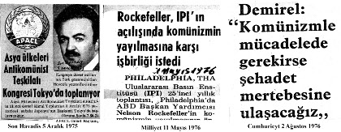

“embedded journalism”. Bu terim savaşta Irak’a saldıran ülkelerin, savaşçı güçlerinin yanına “iliştirilmiş” savaş
görüntülerine, böylece ilk ulaşan ve aktaran “seçilmiş” (!) medya mensuplarını nitelendirmek için kullanıldı:
“İliştirilmiş gazetecilik olarak nitelenen özellikle SSCB ’nin dağılmasından sonra tek kutuplu dünyada, tek yanlı
küreselleşmenin oluşmasıyla ortaya çıkan gazetecilik. ABD
ve yandaşı güçlerin Irak işgalinde çok somut bir biçimde ortaya çıkan bu gazetecilik türü, her ülkenin kendi kurumlarında da savaş muhabirliği, polis muhabirliği, adliye muhabirliği, spor muhabirliği gibi o kurumun ve egemen güçlerin tek yanlı görüşünü yansıtan demokratik olmayan gazetecilik” diye tanımlanıyor. (Wikipedia) Uçağa Bindirilmiş Gazetecilik: On Boarded Journalism
Sırası gelmişken haddim olmamasına karşın bir deyim türetmek istiyorum “on boarded journalism” yani “uçağa bindirilmiş gazetecilik”...
Cezaevlerindeki yazar arkadaşlara bir önerim var “Cezaevi yan gelip yatma yeri değildir.”
Bizim suçumuz yok diye sızlanacaklarına “on boarded journalist”leri saptamakla işe başlasınlar... O zaman suçlarının ne olduğunu daha iyi anlarlar. Şaka bir tarafa tanısam da, tanımasam da aydın oldukları için hepsine saygı duyduğum için bir tüyo vermek istiyorum.
Cumhurbaşkanı Turgut Özal, Abdullah Gül ve Başbakan Recep Tayip Erdoğan’ın uçaklarına iliştirilmiş gazetecileri saptayıp bu kişileri biyografileriyle öğrenip, tüm yazdıklarını yorumlayıp “on boarded” gazetecileri saptayabilirsiniz.
Soner, telefonuma yanıt veremeyecek kadar büyüdüğünü bilmeme karşın benimle çalışmaya hazır mısın?
Böyle bir araştırma içine girmek için kuşkusuz Silivri en emin limandır günümüz Türkiye’sinde...
“On boarded” gazetecileri sınıflandırdığımızda her türüne rastlayabiliriz...
TV kanalları, ajanslar, medya, dergiler, yayınevleri vb. gibi yapıların küresel ilişkilerini saptarsanız küreselleşme yandaşlarını ve tetikçilerini saptayabilirsiniz.
Örneğin, her zaman her kanalda karşınıza çıkan ve “şablon slogan”larla bilgiçlik yapan kişiler de mercek altına alınmalıdır diye düşünüyorum.
Silivri’nin Gazetecileri
Silivri’de boş yere bağırıp durmayın, “terör” suçlususunuz.
(!) Büyüklerimizden daha mı iyi bileceksiniz?..
“Yeni Dünya Düzeni”ne uyum sağlayamadınız. “küresel çıkarlar”a uyum sağlayamadınız. Bundan büyük suç var mı?
Başına çuval geçirilen askerlerimizi anımsayın. Başınıza gelenleri, bu olayı milat kabul edip değerlendirmeye çalışın...
Oturun oturduğunuz yerde... Sokrates’in, Beccaria’nın dediklerini ve Magna Carta’yı (1215), Habeas Corpus Act’ı (1679) vb. okuyunuz...
Ben de önerdiğim yapıtları “selimiye zindanları”nda yeniden okuduğumda Magna Carta’dan 746 yıl Habeas Corpus Act’tan 282 yıl sonra “1961 Aanayasası”nda yer alan yargılama, tutuklama, özgürlüğe ilişkin kuralların getirildiğini öğrendim. Aradan yarım yüz yıl geçti. Şimdi “ileri demokrasi”ye geçiyoruz. Magna Carta’dan 749 yıl daha geriye gideceğiz.(22)
Sevgili tutsak gazeteciler, iyi ki Silivri’desiniz. Yoksa üzerine ölü toprağı serpilen toplumdan ses seda çıkmadan
“tabutunuza çivi çakılacaktı”.(23)
Yargılamanın sonunu bekleyip umutlanmayın, afla çıkacaksınız.
Kehanette
bulunmuyorum.
Ben
bu
filmin
başoyuncusuydum. Bomba Davası’nda (1972-75) istememe karşın “Selimiye (Ebu Garip) Cezaevi”nden afla çıktım.(24) Saygıdeğer Prof. Yalçın Küçük çok dikkatli bir araştırmacı olmanıza rağmen gözden kaçırmış olabilirsiniz. Bazı gazetecilerle birlikte gözaltına alındığınız günün tarihi 3
Mart’tı... Devrim kanunlarının kabul edildiği gün... Ne ince ayar değil mi? (25)
Yalçın hocam, sen iyi koku alırsın, bazı “embedded gazeteciler” Emniyet’ten bile önce davranıp sütunlarında bazı kişileri hedef gösterip görevlerini (!) yerine getiriyorlar...
Silivri’ye konuk edilmeden önce sizinle söyleşi yapan gazeteciyi iyi tanıyor olmalısınız, “Halkçı ve orducu sosyalist Yalçın Küçük”...(26)
Sevgili hocam lütfen içerde de “halkçı, orducu ve de sosyalist” olmaya devam ediniz. Yanınızda olmak isterdim ama 87 yaşındayım, iki kansere karşı “devrimci direnci”ni sürdürüyorum... Beni bağışlayınız... Görevimi şimdilik “açık hava hapishanesi”nde sürdüreceğim mezara kadar... “Hava kurşun gibi ağır” yaşamak istemiyorum... Emirleri Mustafa Kemal’den alıyorum... Ölümümün, dirimden daha fazla işlevi olmasını umut ediyorum...
İyi ki içerdesiniz... Arkadaşlarınız sokağa döküldü, “basın özgürlüğü” diye bağırıyorlar... Turnusol görevi gördünüz.
Medyayı bir kez daha test etmek olanağı bulduk.
“Basın özgürlüğü”nden yana olanlar-olmayanlar diye...
Birinci grupta bulunanlar “fena halde” yanılıyorlardı.
Kuramsal anlamda “basın özgürlüğü” olabilir. Bazı dönemlerde ne yazık ki özgürlükler rafa kaldırılıyor.
Boşu
boşuna
sokağa
çıkıp
bağırmayın.
“Basın
özgürlüğü”nün olmadığını kabul edip düzeni sorgulamaya başlayın. Bir zamanlar muktedirlerden gelen emirlerle saygın gazeteciler: Emin Çölaşan, Bekir Coşkun, Oktay Ekşi, Cüneyt Ülsever vb. gibi sokağa bırakıldı...
Buna benzer olaylar Fehmi Koru ve Önder Aytaç’ın bile başından geçti.
Perakendecilik dönemi bitti... Günümüzde gazeteler, TV
kanalları toptan alınıp satılıyor. Bir gün sabahleyin patronunuzun değiştiğini de sürprizle karşılaşabilirsiniz.(27) Kuşkusuz, başından beri izlediğim “medyadaki küreselleşme”
küreselleşmenin patronları tarafından tezgâhlanıyor.
Sevgili Uğur Dündar, Sedat Ergin, Can Dündar, “basın özgürlüğü” kavramının teoride olduğunu yaşamımda edindiğim tecrübelerden biliyorum. Boşuna üzülmeyin, yorulmayın...
27 Mayıs öncesini araştırınız, 12 Mart ve 12 Eylül faşist darbe dönemlerinde cezaevlerinde işkence gören: Doğan Avcıoğlu,, İlhan Selçuk, İlhami Soysal, Uğur Mumcu, Veli
Yılmaz vb. gibi çok değerli yazarlarımızın kitaplarını gözden geçiriniz.(28)
4 Temmuz-31 Ağustos 1972 tarihleri arasında yaklaşık bir ay işkence gördüm. Benim gibi on binlerce genç, aydın, akademisyen ve yurtsever işkence tezgâhından geçti.
İşkenceciler ve onların amirlerinin çoğu ABD’de “özel eğitim”den
geçirilmişti.
“komünizmle
mücadele”,
“sorgulama”, “psikolojik savaş”, “sahte belge” üretme yöntemlerini bilimsel yöntemlerle (!) öğrenip “vatansever”
olmuşlardı...
“Atatürkçü Türk Silahlı Kuvvetleri mensuplarına ve sosyalistlere” işkence yapıp, sahte belgeler üretip sahte davalar açıp “Yurtseverleri” yargılıyorlardı.(29) İğrenç ve aşağılık dönemde kızlarımızın ve kadınlarımızın vajinalarına, gençlerimizin anüsüne cop sokuyorlardı... “Vatansever” bir
“NATO paşası” vajinasına, cop sokma işkencesini kutlarcasına iğrenç açıklamalar yapıyordu...(30) İşkenceci İstanbul Sıkıyönetim Komutanı Org. Faik Türün çelişkili ifadelerle suçunu gizleyeceğini sanacak kadar saf ve çifte kavurulmuş bir “vatansever”di. (!) Bu işkenceciyi son yolculuğuna uğurlayan “paşalar”ın (!) psikolojilerini bilmek isterdim...
Sevgili Mustafa Balbay “Zulümhane” diye bir kitap yazmadan İlhan Selçuk’lara, Uğur Mumcu’lara yapılanları düşünmeliydin. Nedense herkes miladı kendinden başlatmayı yeğliyor. O nedenle de “tarih tekerrür ediyor” ... Selimiye, Diyarbakır cezaevleri ile Silivri’yi karşılaştırabilseydin
“Hilton”da yattığını anlardın. Otur oturduğun yerde suçlusun... “Atatürkçüsün, Türk Silahlı Kuvvetleri’ni
tutuyorsun ve de düşünüyorsun” Milletvekili olup çıkmanı isterim. Ancak TBMM’nde sana düzeni sorgulamak şansını vermeyeceklerini
de
biliyorum.
Çünkü
“antiküreselleşmecisin”, “embeddet” ya da “onboarded”
gazeteci olsaydın paşalar gibi yaşar, dışarıda milletvekili adayı olup son model Mercedes’le memleketinde şov yapardın.
Eski yazılarını gözden geçirirsen suçunun ne olduğunu daha iyi anlarsın. Örneğin ben suçlu olduğunu saptadığım için (!) bir kitabımda yer verdim.(31) Bir yazında İstanbul’da toplanan
“NATO zirvesi”nde Bush’un taleplerini açıklıyorsun:
“— Trakya’da yeni bir üs kuralım.
— Mardin-Batman-Silopi üçgeninde 18.000 asker bulunduralım.
Bu askerler Türkiye dışındaki operasyonlar için bildirimsiz girip çıkabilsin.
— İncirlik genişletilsin ya da Batman Havaalanı’nı üs yapalım.
— Sabiha Gökçen Havaalanı’nı kullanma izni verin.
— Trabzon ve Samsun limanlarını deniz üssü olarak kullanalım.
— Boğazlar’dan gemilerimize bildirimsiz geçiş hakkı tanıyın.
— İskenderun Körfezi’nde bir deniz üssü kuralım ya da İskenderun limanının bir bölümünü bize verin.”
Sevgili Balbay içerde olduğun için dua et... Muammer Aksoy, Uğur Mumcu, Eşref Bitlis’i sorgusuz sualsiz ortadan kaldırdılar... Sen “zulümhane”ye razı ol yoksa seni benim gibi, F tipi hücreye atarlar. Ben de Allahıma şükürler ediyorum. Büyük paşalar(!) iki kez asılmamı emretti.
Direnerek paçayı kurtardım. Emperyalizmin dini imanı yoktur. Müslüman’ı Müslüman’a kırdırırlar... Denetime aldıkları medyayı kullanıp halkı İngiltere’nin gelecekteki kraliçesi Kate Middelton’un düğünü de yetmiyormuş gibi, külotunun rengiyle bile oyalarlar... Yazık oldu Diana’ya, gündemden düştü...
Kontrgerilla Düzeni ve Medya
Böyle bir düzende “adalet aramak” yanılgıların büyüğüdür diye düşünüyorum. Sadece düşünmüyorum yazıyorum ama derdimi kimseye anlatamadım.
Bana göre 1967 yılında “Türkiye düzeni”, “askeri demokrasi” idi.(32) 1977 yılında “iktidarların çeteleşmesi”(33) 1993 yılında düzenin adı “kontrgerilla cumhuriyeti” idi.(34) 2009 yılında “kontrgerilla düzeni”nden(35) söz ediyordum.
1975 yılında yaptığım Savunma’da ise ilk kez kamuoyunu iki resmi belgeyle tanıştırdım:
— ST 31-15 (FM 31-15) [Gayri Nizami Kuvvetlere Karşı Harekât].
— FM 31-16 (Counterguerilla Operation).
ST 31-15’te bir yeraltı örgütünün cinayet dahil her türlü eylem yapabileceği ve bunları yaparken de yasalara bağlı olmayacağı açıklanıyor. Bu eylem için ABD yardım ediyor.
Aynı talimnamede “suçsuz kişilerin adi suçlarla suçlanması”
da var. Ama halen “faili meçhul cinayetler”i konuşuyoruz.
“Kontrgerilla düzeni”nde iş ve ticaret adamları ve örgütleri ile işçi sendikaları, medya, din adamları, polis ve yargı bir potaya konulur; bu düzen medyayla desteklenir.(36) Böyle bir düzende adalet beklemek havanda su dövmektir.
Bu ülkede 48 yıl süreyle yargılanmış bir kişi olarak adalet olmadığını biliyorum. Ne yazık ki adaleti dışarıda arıyorum.
“Avrupa İnsan Hakları Mahkemesi”nde (AİHM) bir dava kazandım. İki davam burada bekliyor, dördüncü davamı da AİHM’e götüreceğim.
Bu dönemde de süregelen davalar AİHM’e giderse oradan yüzde yüz geri dönecektir. Bu tazminatları ödemeye devletin bütçesi yetmeyeceği için daha şimdiden “Anayasa Mahkemesi” devreye sokulmaya çalışılıyor. Yargı “küresel demokrasi”ye göre şekilleniyor, Türk Silahlı Kuvvetler hedef tahtasına konulurken “Emniyet örgütü”nün cemaatin eline geçtiğini yazanlar, Hoca Efendi’ye dokunanlar yanıyor...
Halkımızın “İslam’ın İslam’a kırdırılması” üzerine kurulu ABD projesine katkı verip kendi inançlarına ters düşme yanılgısına sonuna kadar prim verebileceğini umut dahi etmek istemiyorum.
”Ülkemizi Hıristiyanlaştırma” doğrultusundaki girişimler açığa çıkmaya başladı. Hoca Efendi’nin “Mavi Marmara”
gemisinde İsrail’in yaptığı katliamda İsrail’i tutmasını aklı başında olanlar savunamazlar. Dünyada hiçbir İslam ülkesinin lideri “Haçlı seferleri”ni savunamaz. BOP’un eşbaşkanlığını
kabul edemez. BOP kapsamında yeniden başlatılan “Haçlı seferleri”ne katkıda bulunamaz.
Eğer bu hıyanete küresel ve cemaat medyası katkı veriyorsa
“gaflet, dalalet ve hıyanet” içinde olduklarını savlayabiliriz.
Atatürk Türkiyesi’ni bağımlılık batağına sürükleyen ABD
güdümlü iktidarlar (1950-2011) ve hatta Büyük Atatürk’ün ölümünden bir hafta sonra heykelini hurdacıya satanlar, 1947
yılında “Marshall Yardımı”ndan alınan para karşılığı “tam bağımsızlığımızı” emperyalizme terk edenlerin ülkemizi getirdiği yer çıkmaz sokaktır... 1938 yılında heykel satıyorlar, 2011’de heykel yıkıyorlar. “Ucube” olduğu için değil...
Sanata karşı oldukları için değil... Saf, temiz, dinine bağlı halkımızı kandırıp ABD güdümünde “ılımlı İslam” anlayışını iktidara taşımak için.
“Ucube”yi yıktırıp hem Kuran’ın Maide Suresi’nin 7’nci cüzüne göre davrandıklarının propagandasını yapıyorlar, hem de propagandayla ABD güdümüne sokulan cemaat ve tarikatlara göz kırpıp oy almak istiyorlar. Öyle ya Kars’ta Şeyh hazretlerinin türbesini bir put nasıl gölgeleyebilir?..
Bu düzene karşı çıkanlar CIA güdümlü “Temizlik Operasyonları”yla esir alınıp tezgâhtan geçiriliyor. Dün bizler
“esir”dik, ne yazık ki günümüzde sizler Silivri’desiniz.
12 Mart’tan sonra Nihat Erim’in başbakanlığı döneminde gençlerimize ve aydınlara yönelik kıyımın adı “Balyoz Harekâtı”ydı...(37)
12 Mart İstanbulu’nun ayrı bir özelliği daha vardı.
İşkencecilerin çoğu 27 Mayıs düşmanı, tarikatçı ve ABD
uşağıydı.
İktidar, küresel ve cemaat medyası “darbelere karşı olma”
sloganıyla sözü “Ergenekon, Balyoz” vb. davalara getirip oy almak istiyorlar. Diyarbakır Cezaevi’ni müze yapıp halkı kandırmak istiyorlar...(38) Ama “Ziverbey (Zihni Paşa) İşkence Köşkü”nü ağızlarına bile almıyorlar. Çünkü işkenceci paşa (!) antikomünist ve tarikatçıydı... 12 Mart 1971 sonrası idam edilenlerin ve yargısız infazlarla öldürülen ve işkence görenlerin aileleriyle örgütlenip “78’liler gibi” haklarını aramalarını öneriyorum...
Çifte standart sergileyenlere inanmayınız...
Bizler 12 Mart zulmüyle mücadele ederken, bugün darbelere karşı olduğunu söyleyip oy toplayanlar o zaman nerelerdeydi?
Soner Yalçın’ın Suçu Ne?
Soner Yalçın’ı tanıyalı yıllar oldu. Sakin, sessiz, saygılı ve aydın bir solcuydu. Zaman içinde saf değiştirdi.
İyi de oldu, cevheri ortaya çıktı. Değerli kitaplar yazıp hepimizi aydınlattı. Para da kazandı... Yaşam standardı yükseldi ama solcu damarı kıpırdadı, düzen yandaşlarının damarına bastı... Kapitalistlerin acımasız olduğunu benden daha iyi bilirdin Soner...
Seni de korumak bana düştü, ben ne birileri gibi ne kendiliğinden savcılığa ve avukatlığa soyunmuyorum. Hem de kanserle boğuşurken...
Hakka ve hukuka olan saygımdan zaman ayırdım, yazdıklarını taradım:
— “Atatürk’ün koruma polisi Nakşibendiydi. (Osmanlı’da dinlemeyi böcekçi başı yapardı.)” (39)
— “Benzer olay (B. Arınç’a suikast iddiası) 44 yıl önce de yaşanmıştı.” “Cadı Avı’nın Tanığı: Ayn Rand.”(40)
— “Mehmet Akif’i şaşırtacak benzerlik/Darbe iddiasıyla tutuklamalar/Eski defterler açılıyor/Güvenilir başsavcı aranıyor.” (41)
Soner, “Ergenekon soruşturması, darbe iddiaları, ıslak imza, kozmik oda, Balyoz planları, EMASYA tartışmaları vb...”
Mehmet Akif’le karşılaştırmak sana mı düştü?.. Hayatını yaşasaydın ya...
—“Tahkikat
Komisyonu’na
‘evet’
mi,
‘hayır’
mı?/Bodrum’un kat irtifakıyla referandumun ne ilgisi var?”
(42) diye sorup duyarlı konulara giriyorsun...
“Erdemir, Tüpraş, Galatport, İETT arazisi, ETİ Alüminyum, Şeker AŞ, İzmir limanı, mayınlı arazi, Tekel kararı, telefon dinlemeleri” vb. gibi duyarlı konuları kaleme almak sana mı düştü?
Soner yoksa sen “terör üyesi” misin?... Sakın benim de başımı derde sokma...
— “Meclis Kürtlere özerklik verdi mi?/Osmanlı liberalleri ile Kürt şeyhleri anlaştı: Kürtlere özerklik.” (43)
— “Annesi Tevfika bilinmeden Menderes anlaşılabilir mi?” (44)
Soner, Menderes’in özel hayatını kurcalamak sana mı kaldı?
27 Mayıs 2010 günü Anakara’da Sky Turk televizyonunun 27
Mayıs programına katıldım. Korkut Özal ile Hasan Celal Güzel de programa katılıyorlardı. Keşke programı izleyebilseydin. H. C. Güzel, Menderes‘i halkın evliya olarak nitelendirdiğini söylüyordu.
Bir TV programında Önder Aytaç, “Adnan Menderes’in ezanı Arapça okutturduğu için idam edildiğini” söyledi.(45) Soner, bazıları rahmetli Menderes üzerinden “darbe karşıtlığına soyunup” oy hesabı yaparken Menderes’in soy isminin başlangıçta “Ertekin” olduğunu açıklamakla nereye varmak istiyorsun?
— “Türkiye’de bir Émile Zola yok./ Portre: Teğmen Mehmet Ali Çelebi.” (46)
Çelebi’yi kıskanıyorum. Bizler teğmenken dünyadan haberimiz yoktu... Milli Şef bilinçli subayların, iktidarı için tehlike oluşturacağını düşünmüş olabilir. Çünkü hem ihtilali teşvik etti, hem de “27 Mayıs”ın tekerine çomak sokmak için yapmadığını bırakmadı.
Dışarıda “Atatürk’ün Gençliğe Hitabesi”ni ve “Bursa Nutku”nu okumak suç olabilir. İçerde istediğiniz kadar okuyup yolunuzu bulabilirsiniz... Ve de “yola devam”
edebilirsiniz. Yolunuz açık ve aydınlık olsun...
Soner, “Mısır Ordusu’nun içini oyup kim ‘kâğıttan kaplan’
yaptı?” deyip yanıtını da sen veriyorsun...
kadarı
da
yetmiyormuş
gibi
“üniformalı
müteahhitler”den söz ediyorsun.(47) Tam da ülkemizde
“kâğıttan kaplan” tartışmasının yaşandığı bir dönemde...
Soner, bu düzenin bu kadar kıvrak zekayı kaldırmayacağını anlaman için Silivri’ye mi gitmen gerekiyordu? Dua et askeri savcı Süleyman Takkeci’nin eline düşmediğin için...
Sevgili Soner, durmasını bilmedin. Bu makalenin yayımlandığı günden bir gün sonra (14 Şubat 2011) Oda TV’de arama başlamıştı...
Belki avukatlarının gözünden kaçmış olabilir. 13 Şubat 2011 günlü “Kâğıttan Kaplan” başlıklı yazının son bölümünde “CHP’nin Zaferidir Bu” ara başlığı içinde,
“Türkiye’de generaller darbeyi zenginleşme aracı olarak kullandı...”
“Ve ne yazık ki, Türkiye bugünlerde hızla tek adamlığa gidiyor” diye yazıyorsun.
Ülkemiz cuntacılardan, çetelerden, mafyadan, terörist medya mensuplarından bertaraf edilip “ileri demokrasi”ye doğru yol alırken Türkiye’nin hızla tek adamlığa gittiğini yazıp taammüden suç işliyorsun.
Nitekim Oda TV’de de faşizmden söz ediliyordu.(48) Herkesin özgürce düşüncesini açıkladığı (!), TV
programlarında sürekli karşı görüşe yer verildiği, Abant Toplantılarının düzenlendiği, TÜSİAD, TESEV gibi “Sivil Toplum Kuruluşları”nın (STK) vb. gibi para ödeyip
ısmarlama Anayasa taslakları hazırlattığı bir ülkede aşağıdaki cümlelerle faşizmden söz etmek Oda TV’ye mi düştü?
“Faşizmin temel özelliğinin ise devlet yetkilerini tek parti elinde toplandığını göstermektedir...”
“Faşizm ..... iktidarı ele geçirirken liberal ve demokrat aydınları yanına çekmek için totaliter rejim korkusunu yayma yöntemini de kullanmıştır...”
Oda TV aranırken seni de konuk etmek için içeri alıyorlardı.
Soner, sen ne uslanmaz bir “terör örgütü” üyesisin(!) Kitaplar yazdın, makaleler yayımladın. Sana bir yere kadar
“küresel medya” fırsat verdi. Kitapların yüz binlerce sattı.
Sana bu imkanı sağlayanların kasalarına para doldurdun.
Hızını alamadın bir de Oda TV kurup muhalefetinin sınırlarını genişlettin. İleri dönük tasavvurların vardı. Seni yanlış tanımışım Soner... Beni bağışla, bu boyutta “hiper aktif” bir çocuk olduğunu anlayamadığım için...
Soner, içeri atıldın, orada da rahat durmadın. Yazılarını sürdürmeye devam ettin.
“Namık Kemal’i kim öldürdü? Namık Kemal okudu, hapse atıldı.” (49)
Soner, Sokrates’ten günümüze değin tüm dünyada okuyanların hapishanelerle tanıştığını bilmen lazımdı. Demek ki nöbet sende...
Devrim ile karşıdevrim ve aydın ile cehalet arasında savaş
sürüyor yüzyıllardan beri...
12’li faşist askeri darbelerden sonraki evrelerde TV
kanallarında silah ve bombaların yanında sergilenen yasaklı kitap görüntülerini ne çabuk unuttun...
“Basında ajan motifi: Kamçılı Kız./Her gazetede birkaç ajan var./Kırmızı kurdele, kırmızı eşarpla propaganda yapmak.” (50)
Soner, yazılarınla eskicilik yapıyorsun... 12 Mart ve 12
Eylül sonrası iddianamelerinin papağanlığını yapmak için beslenen dönemin medyasında “antikomünist propaganda”nın şaheserlerini bulabilirsin.
Birkaç örnekle yetinmek zorundayım:
— 12 Mart döneminde Erzurum Atatürk Üniversitesi’nde görevli bir akademisyen Homongolos adlı bir kitap yazdığı için ciddi ciddi “komünist propaganda” yapmak suçuyla yargılandı. Neymiş kitabın son hecesi, tersinden okununca
“sol” olurmuş... Ya bu davanın savcısı (!) ABD’de Los Angeles şehrinde yaşasaydı...
— Şirketin adını “Nar” koyanlar komünistlikle suçlandı...
Neymiş, Nar tersten okunduğunda “Ran” olur ve komünist (!) Nazım Hikmet’in soyadını çağrıştırırmış...
— Can Yücel, Gerilla Harbi diye bir kitap tercüme etmişti.
Kitap üç bölümden oluşuyordu. Giriş bölümü ünlü ABD’li gerilla generali Griffin’e aitti; ikinci bölümü Mao, son bölümü ise Che Guevara yazmıştı. Kitap çok ilginçti. Her iki sol lider birbirlerinden habersiz gerilla pratiğinden geldikleri için yazdıkları inanılmaz derecede benzeşiyordu.
Yalnız Can Yücel’e “komünizm propagandası”ndan dava açan savcı “sehven” ABD vatandaşı Gen. Griffin’e ait bölümü dikkate almıştı... Yani Griffin, “komünizm propagandası”
yapmaktan mahkemeye verilmişti. Ayıkla pirincin taşını...
Can Yücel’in(51) avukatı Z. Nur Erün aynı zamanda benim de avukatımdı. Bu nedenle olayı ayrıntılarıyla biliyorum.
Avukat, İstanbul’da, ABD Konsolosluğu’na başvurup belge aldı. Gen. Griffin’in ABD’li olduğunu kanıtladı. Müvekkili beraat etti.
Sevgili Soner, birilerinin “yazarların gerektiğinde kulaklarından tutup atılması” tehdidini umursamadın. İçerde de yazmaya devam ettin. Patronunu güç durumda bırakmış
olmalısın ki işine son verildi.(52) Üzülme, direnme gücünle, engin kültürünle aydınlığı temsil ediyorsun... Bulunduğun yeri de aydınlatmaya devam et...
Aslında sizlerin içeri alınmış olması yurtdışı ve yurtiçindeki tepkileri artırdı. Gerek ABD ve gerekse AB’de kurumsal ve bireysel karşı koyuşlar yoğunlaştı. İç ve dış basın Türkiye’de
“basın özgürlüğü” ve “demokrasi”yi tartışmaya başladı.
Yetkili kişilerin duyarsız tavırları ve eleştirileri önemsemeyen tutumları, ülkemizde rejim konusunda kuşkuları artırdı...
Açıklanan “basın özgürlüğü” raporuna göre 101’inci sıradan 106’ncı sıraya düştü (4 Mayıs 2011 tarihli gazeteler).
Her ne kadar “Çay geçilirken at değiştirilmese de” yoğun dış ve iç tepkiler Savcı Zekeriya Öz’ü yerinden etti...
Mahkeme başkanı ile üye yargıçlar arasında alışılmışın ötesinde küskünlükler yaşanıyor. Bu süreç sonunda Silivri’de

görülen davalara halkın güveni her geçen gün azalmaya başladı.
Tüm bu süreci, en ince ayrıntısına kadar izleyen bir kişi olarak, Soner Yalçın örneğinde olduğu gibi “silah arkadaşlarım” yönünden de eleştirmek isterdim. Ancak uzun tutukluluk hali şimdiden AİHM standartlarını aştı. İktidar şimdilik AİHM’e gidişin önüne engel koymaya çalışıyor.
AİHM Eski Yargıcı Rıza Tüzmen
Bu nedenle AİHM eski değerli yargıcı Rıza Tüzmen’in konuya yaklaşımını özetlemek istiyorum.
Türkiye’de İnsan Hakları Kimin Sorunu(53)
“ABD büyükelçisi’nin ‘Balyoz davasını dikkatle izliyoruz.
Basın özgürlüğünden söz ederken gazetecilerin gözaltına alınmasını anlayamıyoruz’ yolundaki sözleri hükümet cephesinde tepkiyle karşılandı.
Bu anlayış İkinci Dünya Savaşı’ndan sonra değişti.
Nazilerin 6 milyon Yahudi’yi sistematik bir biçimde öldürmesinin yarattığı dehşet, insan hakları ihlallerini tüm uluslararası toplumun ilgi alanına soktu. Bu gibi ihlallere sadece moral ilkelerle karşı koyulamayacağı anlaşıldığından, insan hakları kurumsallaşmaya ve hukuksallaşmaya başladı.
Nazi savaş suçlularının yargılandığı Nürnberg Mahkemesi, insan hakları ihlallerine karşı uluslararası yaptırım uygulanmasının ilk adımı.
Soğuk savaşın sona ermesinden sonra ise, insan hakları tüm liberal demokrasilerin ortak paydası oldu.
Hiçbir devlet insan hakkı ihlallerini saklamak olanağına sahip değil.
İkincisi, küreselleşme bir uluslararası sivil toplum yarattı.
Bu uluslararası sivil toplum örgütleri, insan hakları ihlallerini izliyor, belgeliyor, dağıtıyor, uluslararası alanda devleti teşhir ediyor ve bir tepki oluşturuyor.
Günümüzde devletler uluslararası insan hakları normlarına uyum sağladıkları ölçüde demokratik devletler sınıfına girmeye hak kazanıyorlar.
Bu gelişmenin sonucunda insan hakları, devletlerin iç işi olmaktan çıkarak uluslararası toplumun sorunu oldu. Bu aynı zamanda, insan haklarının devletlerarası ilişkilerin bir parçası olması anlamını taşıyor. Uluslararası toplumun, insan haklarını korumak gibi kolektif bir sorumluluğu doğuyor.
İnsan haklarının evrensel niteliği, insan hakları kavramının içinde var. Tüm insanlar bu haklara doğuştan eşit olarak sahip olduğundan, bir ülkede insan haklarının ihlal edilmesine tepki göstermek, insan olmanın getirdiği bir sorumluluk.
Ancak insanın değer taşımadığı, totaliter rejimlerle yönetilen ülkeler, insan haklarını kendi içişleri olarak görüp, evrensel normlara kapılarını kapamak isterler.
Dışarıdan gelen eleştirileri öfkelenmeden dinlemek ve gereğini yapmak o ülkedeki demokrasinin kalitesini yansıtır.”
Türk Modeli İster misiniz?(54)
“Doğu Avrupa’da komünist rejimlerin yıkılmasından sonra, demokrasi tek geçerli yönetim biçimi oldu.
Bu tür demokrasilere örnek Putin’in Rusya’sı, Chavez’in Venezuela’sı. Ancak Güneydoğu Asya’da, Latin Amerika’da başka çok örnek var.
Freedom House’un 2010 raporuna göre, demokraside gerileme var. Hükümetler genelde serbest seçim yapıyorlar.
Ancak yargı bağımsızlığı, basın özgürlüğü gibi liberal demokrasinin özünü oluşturan temel değerlerine saygılı davranmıyorlar. Ayrıca keyfi tutuklamalar, insan hakları ihlalleri birçok ülkede demokrasinin kurumsallaşmasını engelliyor.
Economist Intelligence Unit’in 2010 raporu Türk demokrasisi hakkında daha ayrıntılı bilgi veriyor. Türkiye, tam demokrasi ve kusurlu demokrasilerden sonra gelen
‘hibrid ülkeler’ sınıfına giriyor. Seçim notu 7,9. Buna karşılık katılım 3,9, demokrasi kültürü 5, hak ve özgürlükler 4,7.
Başka bir deyişle, Türkiye’de seçimler dürüst yapılıyor.
Ancak özgürlükler sınırlı, katılım zayıf, demokrasi kültürü iyi değil.
Oysa, Türkiye’deki demokrasinin en büyük özelliği iktidarın tek elde toplanması. Büyük bir güç yoğunlaşması oluşması. Bağımsız kurumlara izin verilmemesi. İktidar denetiminde bir yapı, sindirilmiş bir basın, yandaşlarla doldurulan partileşmiş bir devlet, iyicene daraltılan bireysel hak ve özgürlükler alanı, keyfi tutuklamaların, yasadışı telefon dinlemelerinin, sabaha karşı yapılan aramaların, gözaltıların yarattığı korku Türkiye’de bir baskı ortamı yaratıyor. Soluk alacak yer bırakmıyor. Türk demokrasisini,
‘hibrid ülkeler’ sınıfına sokuyor. Türk demokrasisi güç

egemen yönetimler modelinin özelliklerini taşıyor. Bu ise gerçek demokrasi değil, demokrasiye alternatif bir model.”
Hukuksal İşlemler(55)
“Nedim Şener ve Ahmet Şık’ın tutuklanmalarının iki boyutu var. Hukuksal boyutu ve basın özgürlüğü boyutu.
Terör örgütüne üye olmak gibi sadece suçun yasal niteliğinin belirtilmesi yeterli değil. Aynı zamanda hangi eylemlerin bu kuşkuyu doğurduğunun da söylenmesi gerekir.
Nedim Şener ile Ahmet Şık’a terör örgütüne üye olmak gibi bir suçlama dışında, bu suçu gerçekleştirmek için hangi eylemlerin yapıldığı belirtilmiyor. Bu Sözleşme’nin 5/2
maddesinin ihlalini oluşturur.
Özgürlükten yoksun bırakmak gibi bireysel hak ve özgürlükler açısından büyük bir önem taşıyan bir konuda savcının takdir yetkisi son derece dar. Bunun geniş tutulması, keyfi tutuklamalara yol açar.
Kısıtlamaya ilişkin CMK 153/2 ile AİHM kararları çelişiyorsa, yargıç, Anayasa’nın 90. maddesi gereğince, AİHM ilkelerine göre karar vermek zorunda. Savcı da, AİHM
ilklerine
aykırı
düşecek
bir
kısıtlama
isteminde
bulunmamalı.”
Türkiye’de Basın Özgürlüğü(56)
“Nedim Şener ve Ahmet Şık’ın tutuklanmalarının ortaya çıkardığı bir sorun tutuklamaların hukuka uygunluğa ise, başka bir sorun da basın özgürlüğü.
AİHM, açıkça şiddete teşvik, ırkçı söylem, hakaret gibi istisnalar dışında basın özgürlüğünün sınırlanmasını kabul etmiyor.
Türkiye’yle ilgili olarak açılan pek çok davada AİHM, gazetecilerin, devletin bütünlüğünü bozmayı hedef alan propaganda yapmak, halkı kin ve düşmanlığa tahrik etmek, terör örgütü kurmak ya da üye olmak gibi suçlardan mahkûm olmalarını, Sözleşme’nin ifade, basın özgürlüğüne ilişkin 10.
maddesine aykırı buldu. Bu davalarda AİHM, açıkça şiddet teşvik öğesi yoksa, basın özgürlüğünü koruyan kararlar verdi.
Şener ve Şık’a atılan suç da terör örgütüne üyelik.
Sorgulamada, Ergenekon davasının inanılırlığının ortadan kalkması, tutuklu yargılananların serbest kalması için kamuoyu oluşturmak, iktidarı eleştirmek ya da cemaatle ilgili kitaplar yazmak gibi bir gazeteci için doğal olması gereken etkinliklerin suç eylemi olarak kabul edildiği anlaşılıyor. Bu eylemler ile terör örgütü arasında şöyle bir mantıksal bağ
kuruluyor: Bu tür eylemler, Oda TV’de bulunan isimsiz, nereden geldiği belli olmayan, gerçekliği ispatlanmaya muhtaç bir belgede geçiyor. Bu bir örgüt belgesi olarak kabul ediliyor. Şener ve Şık da bu eylemleri yapıyorlar. Bu eylemler normal gazetecilik etkinliği olsa bile, mademki Oda TV’deki belgede bu etkinliklerden söz ediliyor, o zaman Şener ve Şık da terör örgütü üyesi. Bu mantıktan hareketle Türkiye’deki tüm muhalif gazetecilerin, hatta daha da ileri giderek, Ergenekon ve Balyoz davalarını eleştiren yerli, yabancı herkesin örgüt üyesi oldukları sonucuna varılabilir.
Basın özgürlüğüyle ilgili başka bir sorun da, Şener ve Şık’ın evlerinde yapılan arama ve el koymalar. Arama ve el koyma,

basın özgürlüğünün ayrılmaz bir öğesi olan haber kaynağının gizliliğiyle yakından ilgili.
Avrupa Parlamentosu’nun son kararında, Ergenekon ve Balyoz davalarındaki uzun tutukluluk süreleri eleştiriliyor, Türkiye’de
hükümetin
beyanlarının
ve
savcıların
faaliyetlerinin ifade özgürlüğünü sınırladığı belirtiliyor, yasaların AİHM kararlarına uyum sağlayacak şekilde değiştirilmesi isteniyor.
Hükümet bu karara, ‘Siz istediğinizi söyleyin, biz bildiğimizi okuruz’ yolunda tepki gösterdi. Ama bu tepkinin Türkiye’yi, demokrasi, insan hakları, hukuk devletinden oluşan evrensel ortak değerler alanı dışına çıkardığını da bilmek gerekir.”
Genç Kemalistler Ordusu Davası ve Medya 1963 yılının nisan ayında gözaltına alındım. Bir ay süreyle, herhalde o dönemde medyanın gündemi günümüzdeki kadar yoğun olmadığından sürekli gündemde kaldım.
Medya tetikçileri beni “günah keçisi” seçmişlerdi.
Yazılarının çoğu aleyhimde, olmasına karşın, özellikle İlhan Selçuk, Teoman Erel’in makaleleri, o koşullarda moralimi yükseltmişti.
20-21 Mayıs 1963 gecesi Talat Aydemir’in başkaldırı girişimi başarısızlıkla sonuçlanınca bu kez medyaya yeni bir konu çıkmıştı, peşimi bıraktılar ama yargılandığım Genç Kemalistler Ordusu (GKO) Davası’nda izlemeye devam ettiler.(57)
Bomba Davası(58)
Bomba Davası adlı bir davada İstanbul Sıkıyönetim Askeri Mahkemesi’nde yargılandığım sürede (1972-75) yeniden Medyanın baş hedefi seçilmiş, “andıç” bombardımanına tutulmuştum. Ne yazık ki özellikle şahsımı hedef alan pembe renkli “Andıç” kitapçığının kapağında Genelkurmay Başkanlığı amblemi vardı. İmza bulunmayan, aslında paçavra değeri bile taşımamasına karşın haysiyetsiz ve onursuz kişiler tarafından, işkenceyle alınmış “kontrgerilla ifadeleri”nden oluşan bu kitapçıktan binlerce basılmış, başta Silahlı Kuvvetler olmak üzere tüm kurumlara dağılmıştı.
Yargılama sonucu sıkıyönetim askeri mahkemesinin kararını içeren “gerekçeli hüküm”de alınan karar Ders Alalım kitapçığını
tümüyle
doğrulamıyordu.
Bu
durumda
Genelkurmay amblemini kullanıp “kara propaganda” yapan çevrelerin tüm foyası ortaya çıkmış oluyordu.
Bu yüce kurumun, eski bir mensubunu aşağılayacağı bir kitapçık yayımlayacağını düşünmek bile istemiyorum. Bu nedenle o günlerde bu tertibi düzenleyenlerin ortaya çıkarılıp özür dilenmesini ilgili makamlardan hâlâ bekliyorum. İnsan haysiyetiyle oynamak bu kadar kolay olmamalı...
Yargılandığım dönemde zamanın milliyetçi, muhafazakâr (!) gazeteleri sürekli şahsımı hedef alıp, “andıç”lamaya devam ettiler.
Özellikle Tercüman ve Son Havadis gazeteleri bu konuda birbirleriyle yarıştılar.
Onlara göre:
— Org. F. Gürler, Org. M. Batur, Ora. K. Kayacan’dan oluşan “Marksist, Leninist bir cunta” üyesiyim...
— Bu cuntanın iktidara gelmesi için ortam hazırlamak amacıyla İstanbul’daki bombalama olayları için örgüte (!) emir vermişim...
— Verdiğim emir sonucu “bilinmeyen işyerinden, bilinmeyen miktarda alınan paraları, bilinmeyen bir örgüte (!)” vermişim...
— Bolu Dağı’nda bilinmeyen bir mahalde bir öğretmeni, bir de öğrencisi olan bir kamp kurmuşum...
— Henüz yapımı tamamlanmamış “Boğaz Köprüsü”nü tahrip etmeyi düşünmüşüm ama eylemi ertelemişim...
— Dinamit alışverişi yapmışım,
— Devrimci kadro listesi (Bakanlar kurulu) ve Anayasa taslağı hazırlamışım vb. gibi...
Ziverbey İşkence Köşkü’nde hepsi işkence altında alınan ifadeler olduğu gibi askeri savcının iddianamesine yansıtılmış
ama el yazısıyla alınan bu itirafnamelerin bir kısmı mahkemeye gönderilmemişti.
Bütün devlet kurumlarını kişisel kin ve ihtirası doğrultusunda yönlendiren Sıkıyönetim Komutanı Org. Faik Türün’ün “sahte delil üretmek” ve “gizli tanık” bulmak gibi bir derdi yoktu. Ziverbey (Zihni Paşa) İşkence Köşkü, “suçlu üretme merkezi” gibi çalışmış. Okyanus ötesinde yetiştirilmiş
(!) işkenceciler, komutanın emirleri doğrultusunda suç ve suçlu imal ediyorlardı. Amaçları Atatürkçülüğü, Kemalizm’i, milliyetçiliği, devrimciliği ve 27 Mayıs’ı suçlamak idi. Tıpkı bugünkü gibi.
Gerçekte “gerekçeli hüküm”den önce hazırladığım 4.283
sayfalık “savunma”yla bu aşağılık tertiplere alet olanların suratlarına tarihsel bir tokat atmıştım. Mahkemenin gücü ve yeteneği savunmamı anlayacak kapasitede değildi. Örneğin mahkeme başkanı sınıf arkadaşım Top. Alb. Mümtaz Onay ile daha sonra karşılaştığımızda: “Talat bir hafta konuştun hiçbir şey anlamadım. Sadece ben değil yargıçlarda anlamadı” diye itirafta bulunduğunda merhum Onay’a şunu söyledim:
“Sizlerin savunmamı anlamayacağınızı biliyordum. Ancak sanık kürsüsünü kullanarak tarihe hitap ettiğimin de bilincindeydim.”
Sıkıyönetim askeri mahkemelerinin savunmaları okumak gibi bir dertleri yoktu. Çünkü işkenceci komutanların emirlerini yerine getirmek, onların çıkarlarına uygun düşüyordu. Aslında savunmamı okuduktan sonra karar vermeleri için en az bir yıl çalışmaları gerekiyordu. Oysaki savunmamdan kısa bir süre sonra gerekçeli hüküm açıklanmış; iktidarların, sıkıyönetimin, askeri mahkemelerin ve işkencecilerin tüm pisliklerini üzerini kapatmak için 1803
sayılı Af Yasası çıkartılıp “Bomba Davası”nı örtbas etmeyi yeğlemişlerdi. İktidarın bu niyetini algıladığım için aftan önce bir dilekçe verdim. 1974 affını kabul etmediğimi belirttim. Bu kez de tertipçiler yasa değiştirip tertiplerinin üstünü örttüler.
Tüm bu girişimlerine karşın dönemin Başbakanı Süleyman Demirel başta olmak üzere af yasasını siyasi amaçla kullanmaya devam ettiler. Her zaman olduğu gibi o dönemin
“medya tetikçileri” af dilekçemi karartmak için çaba sarf ettiler.
Üç yıllık emek ve bir daire fiyatına mal olan bu çabam ne yazık ki göz ardı ediliyor. Günümüzde “darbe karşıtlığı”
moda oldu. Bazıları bundan siyasal rant sağlamak için çaba sarf ediyorlar. Hem de 27 Mayıs 1960’tan 27 Nisan 1997
yılına kadar olan süreci yargılayıp Silahlı Kuvvetler’den öç almak istiyorlar.
Derin Devlet(59)
Bu konuda piyasada 10’dan fazla kitap bulunuyor.
Genellikle yazarlar derin devlet’i “Susurluk Olayı”
bağlamında değerlendiriyorlar. Ben ise 1.000 yıllık Siyonist bir derin devlet yapılanmasından söz ediyorum. Günümüzde de “küresel dayatma” sonunda “ABD derin devleti” masonik bir dünya düzeni kurmak için, “BM ve NATO”yu kendi çıkarları doğrultusunda kullanıyor.
“Susurluk
soruşturması”
sırasında
“Elkatmış
Komisyonunun” almış olduğu 10 kişinin sorgulanması kararına karşın Başbakan yardımcısının “koalisyonu bozma tehdidi” üzerine dönemin başbakanı “Susurluk Komisyonu”
raporunun sonuca ulaşmasını engellediğine dair savlar olmasına karşın faturanın Em. Tuğg. Veli Küçük’e çıkarılması haksızlıktır.(60)
Savunmamı tarihe mal etmek için, İstanbul Üniversitesi’ne ve Türkiye Barolar Birliği’ne ücretsiz verme önerime karşın olumlu yanıt alamadım. Bu tavır Türkiye’nin ayıbıdır. En azından bana yapılan tertiplerin bir başka gruba yapılması engellenebilirdi... Ama yetkililerde “derin devlet”i anlamak, mücadele etmek niyet ve iradesini göremiyorum.(61)

Başbakan Recep Tayyip Erdoğan: (2005)(62)
“Soru: “Derin devletle tanıştınız mı, sizin tanımınız nedir?”
R. T. E.: Valla, elimde ölçecek kumpas yok şu anda. Olduğu zaman söylerim. Böyle bir tanımın içersine de daha çok tabii emekli olanlar giriyor. Muvazzaflar pek girmiyor. Biz, onu bırakalım yine emekliler yapsın.”
Soru: “Ecevit, ‘tartışmanın, hükümetin iyi gittiği bir dönemde gündeme getirilmesini yadırgadığını’ söyledi?”
R. T. E.: “Doğru. Bayram değil seyran değil meselesi, lüzumsuz böyle şeyin gündeme getirilmesi... Türkiye, bunların 12 Eylül öncesinde bedellerini ağır ödedi. Daha sonra yine benzer gelişmeler oldu. Türkiye’ye bu tür, insanımızı da huzursuz eden, piyasaları da olumsuz etkileyen gündemler getirilmemeli. Bunlarla uğraşmanın anlamı yok zaten... Gidin yoklamayı yapın, kimse ne derin devleti ne de kontrgerillayı konuşur, bilir...”
CHP Genel Bşk. Yrd. Gürsel Tekin (2011) Ankara (Cumhuriyet Bürosu) - CHP Genel Başkan Yardımcısı Gürsel Tekin, “Kemal Kılıçdaroğlu’nu derin devlet genel başkan yaptı” diyen AKP Kahramanmaraş Milletvekili Avni Doğan’a “Bizim Türkiye’de bildiğimiz tek derin devlet, AKP’nin derin devletidir. Sizden başka derin devlet varsa çıkarın ortaya da derin mi, sığ mı neymiş görelim. AKP ve yandaşları köşeye sıkıştıkça derin devletin ipine sarılıyor, Siz kendi derin devletinizi gizlemek için ne yaparsanız yapın, biz söz veriyoruz; halkın iktidarında AKP’nin derin devletini de
kendisini derin devlet gibi yutturmaya kalkanları da karanlık köşelerinden çıkaracak ve hesap soracağız” dedi.
Yetkili kişilerin derin devlet anlayışlarını okuyucuların takdirine sunuyorum.
12 Mart Döneminde Medya
Bomba Davası’nda yargılandığım süreçte (1972-75) ve daha sonraki evrede malum çevreler beni suçlamaya devam ettiler.
Örneklemek gerekirse, Son Havadis gazetesinde, Bomba Davası iddianamesinde yer alan, “iddianın sefaleti” diye tanımladığım iddiaları alıp sürekli köşesinde beni suçlayan Tekin Erer, aslında görevini yapıyordu.
Çünkü; Erer “Asya Ülkeleri Antikomünist Teşkilatı”
kongresinin Tokyo’daki toplantısına katılıp ağırlanmıştı...
Toplantıya katılan kişiler:
— Prof. İlhan Akgün
— Prof. Mehmet Yardımcı
— Tarihiçi Yılmaz Öztuna, aynı görüşü paylaşıyordu.
O dönemde “antikomünizm”den geçinenler bu dönemde
“küreselleşme
yanlılığı,
radikal
islam
düşmanlığı,
cemaatçilik”ten geçiniyorlar...
Ceza ve tutukevinden çıktığımda bir gün Tekin Erer’e rastladığımda oldukça sert bir tavır sergileyip aleyhime yazmış olduğu yazıların gerçek olmadığının mahkeme kararıyla doğrulandığını anlatıp hesap sordum. Özellikle
“Boğaz Köprüsü’nü havaya uçurmak” savını ağzına sakız etmişti. Kuşkusuz söyleyecek bir şeyi yoktu...
Nazlı Ilıcak(63)
“İhtilalci” olduğumu mahkemede açıkça belirttiğimi kitabına alıp, beni “Uslanmaz ihtilalci” diye suçlamaktadır.
Evet “Atatürk ihtilalcisiyim” ihtilalin zaman, mekân ve imkân meselesi olduğunu da çok iyi bilirim. Lenin’in dediği gibi, ihtilalde “bugün erken, yarın geç” kuralı geçerlidir. Hiç öyle bir fırsat elime geçmedi. Bazı çevreleri hâlâ tedirgin ettiğim için, 48 yıldan beri yargılanıyorum ve hâlâ bazıları için konu oluyorum...
Herhalde ölümü rahat bırakırlar.
Nazlı Ilıcak, Tercüman gazetesindeki 39 gün aralıksız süren yazı dizisinde gerçekten de çok büyük gazetecilik yapıyordu.
Kendisine postayla gönderilen (!) belgeleri değerlendiriyor, onunla da yetinmeksizin yazdıklarını kitaba dönüştürüp paraya çeviriyordu.
Ilıcak’a kanımca yazı dizisinde adı geçen tüm kişilerin şükran borcu vardır. Çünkü; kendisine MİT’in ulaştırdığı(64) bu el yazısı itirafların bir kısmı mahkemeye gönderilmiş diğer bölümü ileride kullanmak için saklanmıştı. Saklanan ifadeleri Ilıcak yayımlayınca, İlhan Selçuk işkence altında verdiği ifadeyi akrostiş yapıp, “İşkence altındayım” diye yazmıştı.
Bir anlamda Ilıcak “ava giderken avlanmıştı”. İlhan Selçuk, kıvrak zekâsını ve aklını kullanıp “Ziverbey (Zihni Paşa) İşkence Köşkü”nde Ilıcak sayesinde ifadelerin niteliğini kanıtlamak olanağını buldu...(65)
Demokratik hukuk devletlerinde istihbarat örgütleri ne sorgulama yapabilir ne de işkence.
Nazlı Ilıcak gençken babasını 27 Mayısçılar hapsettiler.
Cuntacılara karşı kini hep sürdü. Hatta diyebiliriz ki “cuntacı düşmanlığı”ndan geçindi. (66)
Ilıcak ünlü “yazı dizisi”nde ve kitabında “el yazılı” (!) ifadelere dayanarak, beni sabotaj ve soygun, yapımı tamamlanmamış Boğaz Köprüsü’nü yapıldığında havaya uçurmakla suçladı.(67)
Nazlı Ilıcak’ın aracılık yaptığı iftiralara yanıt vermek için kendisine 2-26 Mayıs ve 20 Temmuz 1986 tarihli üç mektup gönderdim. Sadece birini yayınladı.
Sayın Ilıcak “dizi yazısı”nda bir anlamda “kötü muameleyi”
kutsamıştı. (68)
27 Mayıs ihtilalcileri yerine beni koyduğundan N. Ilıcak’a müteşekkirim. Süregelen bir yanılgıyı düzeltmeme neden olduğu için.
N.Ilıcak:
“Hakkınızdaki dinamit, bomba, sabotaj gibi suç isnatları beraatla neticelenmemiştir. Gerekçeli hükümde bu konularda yeterli delil bulunmadığından bahsedilmiş ama dava 171’inci madde kapsamına alındığı için 1974 affıyla düşmüştür. Af çıkmasaydı gerekçeli hükümden beraat edeceğim anlaşılıyor demek başka, beraat ettim, temize çıktım demek başkadır.
Beraat etmediniz Sayın Talat Turhan ama belki edeceksiniz.
Belki kelimesinin bulunduğu her yerde şüphenin devam ettiğini unutmayınız.”

Bu kadarına da pes doğrusu... Kendisine gönderdiğim 2
Mayıs 1986 tarihli mektubumu kitabına koymasına karşın eklerinde yer alan Selimiye Askeri Ceza ve Tutukevi’nde yazdığım “affı kabul etmeme dilekçemi”(69) göz ardı edip beni
“şüpheli” ilan etmek basın etiğiyle bağdaşabilir mi?
Nazlı Ilıcak Kitabında
“Görüldüğü gibi Talat Turhan’ın ihtilalci ruhu 1960’lara dayanmaktaydı. Kendisi 1961 seçimlerinin iptali için kurulan ve idamların gerçekleşmesi maksadıyla Mili Birlik Komitesi’ne baskı yapan Silahlı Kuvvetler Birliği’nin bir üyesiydi. Daha sonra yasadışı bir örgüt olan Genç Kemalistler Derneği’ndeki faaliyetlerinden dolayı emekliye sevk edildi. 12 Mart’a giden yolda, kökünü 27 Mayıs darbesinden alan eziklikler, başarısızlıklar, ihtiraslar açıkça göze çarpar. Talat Turhan da 27 Mayıs’tan devraldığımız profesyonel darbecilerden biridir.”
Yazıldığı
gibi
“Genç
Kemalistler
Derneğindeki
faaliyetlerimden dolayı emekliye sevk edilmedim”. Genç Kemalistler Ordusu (GKO) Davası 1965 yılında hükme bağlandı. Bense davaya bağlı olmaksızın, 1964 yılında emekliye sevk edildim. (70)
Yassıada’da İdamlar
Yassıada’daki yargılama sonucunda “Yüksek Adalet Divanı”nın üzerinde baskı kuran Silahlı Kuvvetler Birliği’nin (SKB) mensubu olarak suçlamak ve bir camianın kinini üstüme çekmek insaf ve vicdanla bağdaşmaz. Şöyle ki:
Eğer zahmet edip 2 Mayıs 1986 tarihli mektubuma ek olarak gönderdiğim yazımı objektif ölçütler içinde değerlendirseydiniz bu büyük hataya düşmezdiniz.(71) Dünya gazetesinde yayımlanan yazımdan 43 yıl sonra, Talat Aydemir’in kitabında bu konuya yer verilmektedir:(72)
“Yassıada’da herhangi bir genç subay infialini önlemek için Emin Arat başkanlığında Kur. Alb. Şükrü İlkin, Kur. Yb. Talat Turhan Yassıada K. Top. Yb. Tarık Güryay’a sanıkların her türlü emniyetinin alınması için bir heyet göndermiştir. Bu teklifi biz albaylar yapmışsızdır. İkinci olarak, Dz. K.K.
Koramiral Necdet Uran Paşa’yı da deniz kuvvetlerinde emniyet almaları için göndermiştir.”
Bu konudaki yazımdan sonra yayımlanan “Aydemir’in hatıratı” olay bazında motamot örtüşmektedir, bir isim farkıyla.
Sayın Ilıcak:
— 27 Mayıs’ın lider kadrosu içinde yer almadım.
— 12 Mart faşist darbesinin tüm ağırlığıyla üstümden geçtiğini biliyorsunuz.
— 12 Eylül’den sonra Ankara Sıkıyönetim Komutanlığı hakkımda tutuklama kararı çıkardı. İstanbul Sıkıyönetim Komutanı Ankara’yı takmadığı için tutuklanmadım.
— 28 Şubat 1997 “balans ayarı” ve 27 Nisan 2007 günlü
“e-muhtıra”cılarıyla uzaktan yakından hiçbir ilgim yok. Tam tersine 1975’ten günümüze kadar yazdığım tüm yazı ve
darbeleri
suçluyorum
ve
darbecilerin
yargılanmasını istiyorum.
Sayın Ilıcak yazılarınız MİT’in yalan ve tertibini içermektedir. 1975 yılında İstanbul Sıkıyönetim Komutanlığı Askeri Mahkemesi’nde hükme bağlanmış, hakkımdaki iddiaların gerçek olmadığı ortaya çıkmıştı. Bu gerçeği göz ardı edip kontrgerilla ifadelerine dönmek hukukla bağdaşmaz.
Ama hak aramak bile masraf gerektirdiğinden hakkınızda dava açamadım. “Gerekçeli hüküm”ü göz ardı etmenizde kasıt olduğu açıkça görülüyor.
Ülkemizde demokrasi, hukuk ve insan hakları bir türlü benimsenemediği için dün ortaya sürülen dehşetengiz iddialar(73) günümüzde de süregelmektedir.
Sayın Ilıcak yine de size şükran borçluyum. Çünkü, işkence ve çok ağır koşullar altında değerli arkadaşlarımın hakkımda düşündüklerini sayenizde öğrenmiş oldum.
— Em. Tümg. Celil Gürkan:(74)
“Ben şahsen Talat Turhan’ın şahsında, belki haddinden fazla şiddetle ifade edilmiş gerçekten vatansever, Atatürk sever, milliyetçi, entelektüel bir eski kurmay subay müşahade etmişimdir.”
— İlhami Soysal (gazeteci yazar):
“Talat Turhan ..... hemen herkesten de duyduğum Atatürkçü ama atak ve asabi mizaçlı olduğu, gözü kara bir asker olduğuydu...”
— İlhan Selçuk (gazeteci yazar):
“Talat Turhan’ı şerefli bir emekli subay olarak bilirim...”
Sırası gelmişken bir meslektaşınızın sizin hakkınızdaki görüşlerine yer vermek istiyorum. (75)
“Türkiye’nin en iyi portre yazarı şair Cemal Süreya gazeteci Nazlı Ilıcak için yazdığı o muhteşem portre yazısında ‘Türk basınının Ajda Pekkan’ı...’ nitelemesinde bulunmuştu...
Hakikaten öyledir Nazlı Ilıcak...
70’lerde gündemdeydi:
Fırtına gibi başlamıştı olaya... Havalıydı... Yaşamayı seviyordu. Biraz yaramazdı...
80’lerin başında gündemdeydi: Bildiğini haykırıyordu...
Taraf oluyordu... Başı belaya giriyordu... Yetmezmiş gibi eşinin de başını belaya sokuyordu...
80’lerin sonunda gündemdeydi: Biraz durulmuştu. Acılar olgunlaştırmıştı onu galiba.
90’ların başında gündemdeydi: Yine küsmüştü birilerine...
Yine taraftardı birilerine...
90’ların ortasında gündemdeydi: Askeri kıpırdanmalar karşısında galeyan hali... Kendisini Refah Partisi saflarında bulmuştu birdenbire...
Sosyetik arkadaşların şaşırıp uzaklaşma dönemi...
Ve geldik 2000’lere... Nazlı Ilıcak yine gündemde...
Sırrını çözmeye çalışıyorum onun...
Sanırım büyüsünü şunlar belirliyor: Kararlılık, mücadele azmi, sükûnetten nefret, işini ciddiye alma, düşman kazanma sanatını icrada ustalık, bildiğini okuma, sözünü budaktan sakınmama, nefret edilmekten ürkmeme... Bir de yeniliğe açık olma...”
Sayın Ilıcak dün olduğu gibi bugün de Atatürkçülük, milliyetçilik, yurtseverlik suçtur. Siz uçtan uca savrulup durdunuz. Bugün de görevinizi yapıyorsunuz. Aramızda
“amatör-profesyonel” farkı var.
Hv. K. K. Org. Muhsin Batur’dan İbrahim Fırtına’ya Saygıdeğer Hv. K. K. Em. Org. İbrahim Fırtına çıldırmadan yatmaya devam ediniz lütfen.(76)
Kanımca sizden değil makamınızdan intikam alınıyor.
Çünkü; Org. Muhsin Batur da “Bomba Davası”nda ek iddianameyle 1973 yılında sanık ilan edilmiş ama o günün dengeleri içinde mahkemede yanıma oturtulamamıştı.
Muhsin Batur’un suçu çok büyüktü. Çünkü, 26 Mayıs 1960
günü, Başbakan Adnan Menderes, Eskişehir Askeri Havaalanına indiğinde 1. Taktik Hava Üssü komutanı olan Kur. Alb. Muhsin Batur’un çıkarttığı merasim birliğinin K.’ı Hv. Kur. Bnb. Necdet Düvencioğlu(77) kıtayı esas duruşa geçirmiş ama geriye dön diyerek Adnan Menderes’i aşağılamış ve sonuçlarına katlanmıştı. Daha sonra da havacı subaylar benzer tavrı sergilemişlerdi. İktidarda bulunanlar elindeki gücü orantılı kullanmasını bilselerdi darbeler yaşanmazdı.(78)
Kur. Alb. Muhsin Batur’un bir suçu daha vardı. 27 Mayıs 1960 günü Kütahya’da Adnan Menderes’i yakalamış ve uçakla Ankara’ya getirmişti...
Sayın Ilıcak, gün geldi sizi de “andıç”ladılar. Haklı olarak tepki verdiniz. Özellikle 12 Mart sonrası “andıç”ladığınız kişileri anımsadınız mı? “Men dakka dukka”
Vesayet, Darbeler, Türk Silahlı Kuvvetleri ve Ergenekon
27 Şubat 2011 günü bir kanalda “Askeri Vesayetin Sonu”
konu başlıklı bir panel düzenlendi. Panele Gültekin Avcı, Mehmet Metiner, Önder Aytaç ve Mümtazer Türköne katılmışlardı.
Belirli bir çevrenin zihniyetini yansıttığı için önemsediğim paneli, el yazısıyla not ettim.(79)
Gültekin Avcı (Emekli savcı) [mealen]:
İhtilal ile ayaklanmayı karşılaştırdıktan sonra:
— “Silahlı
Kuvvetler
müdahalesi
ihtilal
değil,
ayaklanmadır.”
—
“28
Şubat
(1997)
halkın
silah
zoruyla
Kemalistleştirilmesidir.”
Önder Aytaç:(80)
28 Şubat’ta Genelkurmay Harekât başkanı olan Korg. Çetin Doğan’ın o dönemde “irtica konusundaki görüşleri”ni ekrana yansıttı. (kısa metrajlı film).
Mehmet Metiner: (AKP Milletvekili adayı)
— “Asker de kendi arasında bir değildir.”
— “Asker beni düşman görmesin, ben de askeri düşman görmem.”
— “Gerekirse tankların üzerine çıkarım.”
— “Asker nerede duracağını bilecek!”
— “28 Şubat anlayışında bir değişim olmadı.”
— “28 Şubat millete ihanettir.”
— “28 Şubat’ın intikamı mutlaka alınmalı, Modern demokrasi’lerde bu intikamı yargı alır. Bu adaletin intikamıdır.”
— “Genelkurmay’ın sicili bozuktur.”
YARSAV, İşçi Partisi (o tarihte Aydınlık gazetesi günlük yayına geçmemişti), Cumhuriyet ve Sözcü Gazeteleri, Yüksek Yargı, Atatürkçü Düşünce Derneği (ADD) ile Çağdaş Eğitim Vakfı’nı (ÇEV) bir potaya koyup suçladı.
Mümtazer Türköne: (Prof.):(81)
— “27 Mayıs Moğol istilasıdır.”
— “27 Mayıs 47 yıl sürdü. 27 Nisan 2007 günü verilen e-muhtırayla bu düzen sona erdi.”
— “28 Şubat, pespaye ...... bir darbedir. Büyük sermaye soygun düzenini sürdürmek için askeri öne sürdü.”
— “2011 ekonomik krizi 28 Şubat’ın sonrası geldi.”
— “Ergenekon’la bir darbe dönemini kapattık, öldürdük, tabutuna çivi çakıp mezara koyup üstünü örttük.”
— “Anayasa yapmanın tam zamanı.”
Medya ve Etik
Yukarıda da belirttiğim gibi Ankara Kitap Fuarı’nda 2000
yılında bu konuda bir konferans vermiş, ABD medyasındaki CIA’ya hizmet eden görsel ve yazılı medya kurumlarını açıklamıştım. Medyamızın büyük bir bölümünün yabancı kontrolüne geçtiğini hepimiz biliyoruz. Bunun dışında, iktidar ve cemaat yanlısı medyayı da katarsanız söyleyecek sözün bittiği yere varılır. O nedenle hep aynı kişiler karşımıza çıkarılıyor. Parayla doyuruluyor. Şablon sözlerle halkımız uyutuluyor. Ara sıra “karşıt” görüşe yer veriliyormuş gibi yapılıp değerli insanlar konu mankeni olarak kullanılıyor...
Yeterince beslendiğine kani olunduğunda da yandaşlar değiştiriliyor. Bir dostum program başına 1.500 dolar aldığını söylemişti. Doğrusu iyi para...
Muhtelif TV kanallarında en az 20 saat yayına genellikle teke tek katıldım ve bu programların hiçbirisinden para almadım.
Ama bir TV kanalında tuzağa düşürülüp yaklaşık 8 yıl yargılandım.
Karşıt görüşe bir örnek vermek istiyorum, programda her zaman olduğu gibi en gerçekçi ve objektif kişi Prof. Dr.
Osman Altuğ idi(82) (mealen):
“Atmaktan kolay bir şey yok. Kim büyüyor? Ekonomiyi halletmeden Türkiye’nin hiçbir sorunu halledilemez. Seçmene rüşvet veriliyor. Geleceği nasıl şekillendireceksiniz? Hayal ile gerçek toplanır mı? Parası olanların demokrasisi.”
Prof. Dr. Oral Erdoğan (mealen):
“Makro baktığımızda küreselleşen dünyada aynı oyunlar dönüyor.”
Prof. Dr. Mümtazer Türköne daha önce de söz ettiğim gibi bu kanalda da “27 Mayıs” ve “yeni Anayasa” konusundaki şablon görüşlerini açıkladı.
Örnek Bir Liboş Portresi
Bir TV kanalında çekim için stüdyoya gittiğimde büyük bir sürprizle karşılaştım. Katılımcılardan ikisi muhafazakârdı.
Bunlardan birisi 27 Mayıs 1960’tan sonra kasaba avukatlığından gelip partisinin en üst düzeyine kadar çıkmayı becermiş bir kişiydi. İkincisi ise THKO (Türk Halk Kurtuluş
Ordusu) Davası’nda savcı yardımcılığı yapmakla övünen bir kişiydi. Deniz Gezmiş’in idamını kullanıp siyasi rant sağlayarak politikaya atmıştı. Oysaki THKO Davası’nda Savcı K.Ç. idi. Başsavcı akıllı bir kişi olduğu için, gölgede kalmayı yeğlemiş, yardımcısını öne sürmüştü. Başsavcının akrabasından biri Ülkücü hareketi Avrupa’ya taşımış ünlü kişilerden biriydi...
Dördüncü katılımcı Deniz Gezmiş’in dava arkadaşı olan ve kendini komünist olarak tanımlayan Mustafa Yalçıner’di.
Gerçekten de kanal yöneticisi kendi açısından ilginç bir topluluk oluşturmuş, kişileri birbiriyle çatıştırmayı başarmıştı.
Kuliste gördüğüm ünlü politikacının hasmane tavrını görünce 27 Mayıs’ı gündeme getirdiğinde üzerinde tartıştık.
Stüdyoda çekim yapıldı. Yayın ertesi gün yapılacaktı.
Gerçekten de yönetmenin arzu ettiği şekilde bir tartışma ortamı doğdu. İlginç bir program oluştu.
Program bittiğinde kanal yönetmeni, beni arabasıyla evime bırakmayı önerdi. Yolda giderken arabanın özel şoförü,
“Efendim önce sizi bırakayım, sonra Talat Bey’i” dedi.
Boğaz’ın Anadolu yakasında, genellikle liboş gazetecilerin sahibi olduğu köşklerin birinin önüne geldik. Yönetmen ayrılıp villasına yöneldi.
Gerçekten de öğrenmenin yaşı yokmuş. Villayı devletin polisleri koruyordu. Yönetmenin sahtecilikten mahkûm olduğunu daha sonra öğrendim.
Şoför arkadaş “stüdyodaki konuşmaları dinlediğini, beni çok takdir ettiğini, kendisinin de benim gibi Karadenizli olduğunu ifade ettikten” sonra “görevli polis olduğunu, özel arabası olduğunu, ne zaman istersem bana hizmet etmekten onur duyacağını” söyledi.
Ertesi gün program yayınlandı. Ünlü politikacının sadece bir cümlesi sansür edilmesine karşın, konuşmam yüzde 50
sansürlenmişti. Böylece fikir bütünlüğüm dağıtılmış, resmen bana yönelik bir kasıt olduğunu anlamıştım.
Bir medya patronunun kızıyla evlenip yaşamının başlangıcında avantaj sağlayan bu çift pasaportlu kişi, ne yazık ki etkinliğini hâlâ sürdürmektedir.
Düşünebiliyor musunuz sahtecilikten mahkûm olmuş bir kişinin villası korunuyor. Bu da yetmiyormuş gibi özel şoförünü de devlet sağlıyor. Eğer bana söylenen doğru ise...
Özelden genele gidilirse bugünkü işbirlikçi, cemaatçi ve iktidar yanlısı medyanın içyüzünü öğrenip “derin devlet”in medya ayağının şifresini çözebilirsiniz.
Bu kitabı yazarken Oray Eğin’in Akşam gazetesinde bir meslektaşını tanımlayan ilginç yazısından alıntı yaptım.
Kitabım bitmek üzereyken Oray Eğin’in yeni çıkan kitabı elime geçti.(83)
Eğin’e teşekkür ediyorum. Çünkü; “medya ve basın özgürlüğü” konusunda yazmak istediklerimin çoğunu kaleme almış.
Fehmi Koru
Zaman gazetesi yazarı Fehmi Koru, “Medya, istihbarat örgütlerinin yönlendirmesine direnmeli, iç ve dış istihbarat örgütlerinin medyayı sık sık kullandığını” söyledi. (84)
“Fehmi Koru, Bilderberg toplantıları ile bu toplantılara katılanlar hakkında, tümü yerici nitelikte olmak üzere bugüne kadar 34 yazı kaleme almış. Yabancı bir gazetecinin bu toplantılara katılanlar için ‘medyanın yalancıları ve fahişeleri’ deyimini kullandığını da yazan Koru, şimdi aynı toplantının davetlisi, Bilderberg mi değişti yoksa Fehmi Koru mu?”
Kitaplarımda Bilderberg örgütünün katılımcılarının ABD
istihbarat örgütleri tarafından seçildiğini, toplantılarının içeriğinin, yerinin ve emniyetinin de onlar tarafından
saptandığını 1999 yılından beri ismen açıklıyorum. “İç ve dış
istihbarat örgütlerinin medyayı sık sık kullandığını” itiraf eden Koru’nun Bilderberg örgütü katılımcısı olmasının çelişkisini bugüne kadar açıklayamadı.
Fehmi Koru 2011 yılının şubat ayında bir dergide yapmış
olduğu söyleşide ilginç açıklamalarda bulunuyor: (85)
— “Benim tanıdığım Tayyip Bey böyle birisi değil.”
— “Bu ülkede hiçbir sağ partiye üçüncü dönem yönetme görevi verilmedi. Bunu ANAP da, Demokrat Parti de gördü.
AKP için bu seçim çok kritik, epey zorlanacak.”
— “Aydınların AKP’yi eleştirmelerini çok sağlıklı buluyorum. Aksi yanlış olur. Geriye dönüş gibi gördükleri gelişmeler varsa eleştirmek hakları, AKP bu eleştirilerden yararlanmalıdır.”
“Ortağın Çocukları” ve Fehmi Koru(86)
“ARI Derneği toplantıya katılan gazetecilerden, toplantıyı düzenleyen ABD örgütünün temsilcilerinden, Stansfieid Turner’dan söz etmiyordu. Şato konuğu Güneri Cıvaoğlu ise Turner’ın CIA eski başkanı olduğunu belirtmese de CIA eski istasyon şefi Graham Edmund Fuller’dan söz ediyordu.
Ve tabii çok ilginç bir isim olarak Türkiye’de iyi tanınan Graham E. Fuller’e de değinmeliyim. Türkiye konusunda bütün Beyaz Saray yönetimlerinin görüşüne başvurduğu Fuller için bir söylenti CIA elemanı olduğudur. Kendisine ve bizim Türkiye grubundan onu tanıyanlardan bazılarına göre değil.
Fehmi Koru ise, şatoya daha önce de gelmiş ve ‘1995
seçimleri sonrasında Türkiye’de Refah Partisi’nin yükselişi’
konusunu anlatmıştı. Son toplantıya katılmasına bir ay kala Como Gölü’nü ve Bellagio Şatosu’nu övüyordu: Geçmişte bir etkinliğine katıldığım Amerikan vakıflarından biri (adını vermiyor), dünyanın cennet köşelerinden biri olan Como Gölü kıyısındaki bir şatoyu, kafalarını toplayıp eser üretebilsinler diye yazarların emrine tahsis ediyor... Şatonun kitaplığı, oradaki imkânlardan yararlanılarak üretilmiş
eserlerle doluydu...
Fehmi Koru, ‘cennet’ köşesindeki son toplantının ardından ev sahiplerinin hayırseverliğine değiniyordu: Bellagio Şatosu, Johnny Walker viski firmasının sahibinin eşi tarafından Rockefeller Vakfı’na hibe edilmiş; vakıf, kendisi hafta boyu süren toplantılar düzenlediği gibi zaman zaman başka kuruluşların da oradan yararlanmasına izin veriyor.”
Fehmi Koru vb. gibi yazarlar zaman zaman bana saldırmak için fırsat kolladılar. Bu kişilerin bağlantılarını algıladıktan sonra onurlu mücadelemde ne kadar haklı olduğumu görmüş
oldum. Onlar kendilerine sağlanan ayda 100 bin liralık olanaklarla tatlı yaşamlarını sürdürürken, ben 1964 yılından beri düzenin pisliklerine bulaşmadan, hiçbir yabancı örgütle maddi ve manevi ilişkiye geçmeksizin yaşamımı sürdürdüm.
Fehmi Koru’nun da açıklamalarından anlaşılacağı üzere Cumhurbaşkanı Abdullah Gül ile Başbakan Recep Tayyip Erdoğan arasındaki iktidar mücadelesi keskinleşmiş gibi görünüyor. Nitekim Süleyman Demirel’in de dostu olan Koru, R. T. Erdoğan’ın uçağından Abdullah Gül’ün uçağına transfer
olan “on boarded gazetecilerin” seçkin bir örneğini oluşturmaktadır.
Aslında bu çelişki uzun zamandır görülüyordu. Her iki taraf yurtdışı seyahatlerinde cemaate yakın medya mensuplarını uçaklarına almaları yanında özellikle A. Gül dünyanın her yerinde Gülen okullarının bulunduğu yerleri seçiyordu.
Politikacılar, anayasacılar, işbirlikçi örgütler daha şimdiden iki gruba ayrılmış görülüyor. “Başkanlık sisteminden” yana olanlar ile karşı olanlar diye...
İleriye dönük niyetlerini 2023 yılına kadar sürdürmek düşüncesinde görülen tek seçici T. Erdoğan’ın “başkanlık sistemine” karşı olanları daha şimdiden dışlamaya başladığını görüyoruz. Nitekim en yakınındaki dava arkadaşlarının seçim bölgelerini değiştirerek bu niyetini açıkça gösterdi.
Wikileaks belgeleri de tümüyle incelendiğinde ABD
kendine çok yakın gördüğü A. Gül’e destek vermektedir.
Buna karşılık T. Erdoğan içte ve dışta karizmasını artırmak için dünya kamuoyunda hoş karşılanmayan tavırlar sergilemektedir. Bazı kamu araştırmalarında Gül önde görünüyor.
F. Koru, A. Gül, Mehmet Şimşek ve Ekmeleddin İhsanoğlu’yla İngiltere’de “Exeter Üniversite”nde öğrenim görmeleri nedeniyle birliktelikten söz edilebilir.
F. Koru’nun A. Gül’e yakın durmasının “ekol”
birlikteliğinden kaynaklandığı söylenebilir.
Ülkemizde önümüzdeki dönemde bütün olayların bu ikili mücadele çerçevesinde şekilleneceğini düşünüyorum...
Kanımca gerek “Küreselleşen dünya”da gerekse ülkemizde medya bir çirkef çukuru içinde bocalamakta ve burada çalışanların lider kadrosu ise çoğunlukla yerli ve yabancı istihbarat örgütleriyle ilişki halinde lüks yaşamlarını sürdürmektedir. Ne yazık ki bu grubun dışında kalan görsel ve yazılı medya marjinalleşmiştir.
Medya ve Etik
“Medya ve Etik” adlı konferansımda kullandığım belgelerin bir kısmını açıklamak suretiyle konuyu sonlandırmak istiyorum:
— CIA Başkanı William Colby: “CIA ajanları gazeteci olarak dış ülkelere gönderilir.” (87)
— “CIA’nın basın mensuplarını ajan olarak kullanması soruşturma konusu oldu. ” (88)
— CIA başkanı George Bush’tan: “gazetecileri de kullanmak” için izin istedi.
“CIA’nın faaliyetlerini denetleyen Senato Komisyonu ......
yayımladığı raporunda, CIA’nın görev sınırlarını aşan casusluk faaliyetleri için gazeteciler ve din adamlarından faydalandığı” bildirildi. (89)
Hillary Clinton, “Nakşiler ile Nurcuların arasının nasıl” (90) olduğunu merak ediyor.
“Büyükelçi Edelman 2004 yılında Washington’a gönderdiği raporda, “Türkiye’de İslam konusunda yakın irtibatta olduğum bir kişi, Mekke ile Medine’yi özerkleştirmek için bizden 10 milyon dolar talep etti” diye yazıyor.
Wikileaks belgesinde İslam’ın kutsal mekânlarını ABD’ye pazarlamak isteyen bu kişinin “Suudi Arabistan’ın ilahiyatçılarıyla” olağanüstü bir iletişimi olan merhum Z.
H.’nin oğlu B. H. olduğu da açıklanmaktadır.
Kutsal mekânları pazarlamak isteyen bu kişiler karşısında medyanın suskunluğunu korumasının dinimiz adına bugüne kadar yaşanılan hıyanetlerin en büyüğü olduğunu düşünüyorum. Kaldı ki Cumhurbaşkanı Sayın Abdullah Gül, Wikileaks belgelerinin bazısının doğru, bazısının yanlış
olduğunu açıkladıktan sonra bu suskunluğun süregelmesinin anlamı ancak hıyanetle açıklanabilir.
— CIA güdümünde kara propaganda: “Pek çok uydurma haberle yanıltılıyor.”(91)
— The Rolling Stones dergisi, “25 yıl içinde 400’den fazla Amerikalı gazeteci ve yayıncının CIA hesabına çalıştığını ileri sürdü.”(92)
— “ABD’de 800 yayın organının CIA hesabına çalıştığı açıklandı.”(93)
— “ABD Adana Konsolosluğu yerel medyaya çengel attı.
Konsolosluk 3 TV yayıncısını ABD’ye gönderdi.”(94) Her şey apaçık ortada, kaldı ki 1964 yılında Genelkurmay Mahkemesi’nde “Genç Kemalistler Ordusu Davası”nda yargılanırken CIA-MİT ilişkisini Türkiye’de duruşma tutanağına geçirten ilk kişi de benim.
Yalan Belge ve Haber Üretilmesi
ABD, FM 30-20 Resmi Talimnamesinin adı Yanlış Bilgi Verme Merkezi’dir.
Kuşkusuz ABD’yle işbirliği halinde çalışan “ev sahibi ülke”nin tüm kurumları bu yöntemleri uzun zamandan beri kullanmaktadır. Bu nedenle medya sürekli yanlış belgeler üretip insanların yaşamlarını karartmaktadır.
— FBI’nin de ipliği pazara çıktı: “Zencileri suçlamak için sahte belge düzenlemiş.”(95)
— “Batılı haber ajansları Üçüncü Dünya ülkeleriyle ilgili yalan haberler veriyor.”(96)
— “ABD usulü yanlış bilgilendirme.”(97)
— “CIA’dan yalan bilgi.”(98)
— “MİT’çi gazeteci için komisyon kuruldu Parlamento’ya yansıyan bu konu da gösteriyor ki, istihbarat örgütü ile medya arasındaki ilişki Parlamento’nun gündemine taşınmıştır.” (99) Kaldı ki açıkladığım gibi ABD resmi talimnamesinden tercüme edilerek 1965 yılında yürürlüğe konulan ST 31-15
Gayri Nizami Kuvvetlere Karşı Harekât Talimnamesi’nde
“suçsuz kişilerin adi suçlarla suçlanması” kuralı var olduğu sürece, bu ülkede hak ve adaletten söz edenlerin bağlantılarını araştırmak gerekir.
1972 yılında yargılandığım ve “Bomba Davası” sanıkları arasına bir mafya mensubu, bir de hırsızlıktan sabıkalı kişi davaya kasten katılmıştı. Sabıkalı kişi kendine verilen görevi bir gün mahkemede ayağa kalkıp “Adam yaralama, gasp ve hırsızlıktan sabıkalı devrimciyim” demişti. Bu tertibi
düzenleyenler sabıkalı bir kişi ile devrimciyi aynı potaya koyup devrimi suçlamaya yeltenmişlerdi...
ABD’li yargıç Oliver Wendel Holmes 1929 yılında,
“Anayasa’daki ilkeler arasında diğerlerine nazaran en fazla riayet edilmesi gereken biri varsa o da düşünce özgürlüğü ilkesidir; yalnızca bizimle aynı fikri paylaşanlar için değil, fakat nefret ettiğimiz fikirler için de düşünce özgürlüğü” (100) diye yazmıştı.
ABD Büyükelçisi Acemi mi?
ABD Büyükelçisi Francis J. Riccardone, Nedim Şener, Ahmet Şık, Soner Yalçın’ın tutuklanması ve Oda TV’nin aranmasından
sonra
“basın
özgürlüğü”
hakkındaki
düşüncelerini açıklamak gereksinimi duydu:(101)
“Türkiye’de tuhaf şeylerin yaşandığı zamanlar oluyor.
Anlamaya çalışıyoruz dedim çünkü gerçekten anlayamıyoruz.
Bir yanda gazeteciler gözaltına alınıyor, bir yanda basın özgürlüğü deniyor. Biz anlamıyoruz. Belli bir dava veya dava konusu üzerine yorum yapmadım. Biz detayları bilmiyoruz.
Davanın ne anlama geldiğini anlamaya çalışıyoruz. Biz anlamıyoruz, çünkü yabancıyız. Açıklayamadığımız belli durumlar ortaya çıktığında anlamak istiyoruz ve açıklamanız için size soruyoruz.”
Büyükelçinin bu açıklamasını ABD Dışişleri Sözcüsü Philip Crowley, “Kaygılıyız” diyerek destekledi.(102) Daha sonraki bir tarihte ABD büyükelçisinin altı gazeteciyi davet edip “of the record” görüşme yapması olaya ilginç bir boyut getirmiş oldu.(103) Çağrılan gazeteciler bir anlamda
medyadaki yapılanmayı yansıtıyordu. İçlerinde Bilderberg örgütü üyeleri, küreselciler ve cemaat medyasından temsilciler vardı. Özel toplantıda büyükelçi “I’am apalled”
(dehşete düşürülmek; sukut-ı hayale uğratılmak) demişti.
Bu arada İçişleri Bakanı Beşir Atalay gerçeklere bağdaştırılması olanaksız bir açıklama yapıp politika literatürüne yeni bir kavram kazandırdı:(104)
“Türkiye, basın özgürlüğü açısından ABD’den daha çok basın özgürlüğünün olduğu bir ülkedir.”
Sayın Başbakan R. T. Erdoğan her zamanki üslubu içinde büyükelçiyi yanıtladı: (105)
“Maalesef bu yaygaraya hiç üzerine vazife olmadığı halde hariçten birileri de inanıyor ve görüş bildiriyor. Türkiye’yi tanımaz, bilmez. Ne nedir? Hangi yasa var? Hiç haberi olmaz. Orada hemen bir tuzağa, tezgâha gelir, kalkar açıklama yapar. Dur ya, önce bir araştır, sor nedir, yargı burada yapacak, hangi neticeye varacak bunu bir öğren, işte buna ‘acemi elçilik’ denir. Bir internet sitesine yönelik tamamen yargı yoluyla bir tasarrufta bulundu. ‘Vay efendim hükümet basını susturuyor.’ Ya bunun bizimle ne alakası var.”
Gerçekte 4 dil bilen, 33 yıllık diplomat Ricciardone diplomatik yaşamında İtalya, İran, Güneybatı Asya, Afganistan, Irak ve Mısır’ı yakından tanıyan, bu arada Türkiye’de görev yaptığı dönemde etnik ve dinsel azınlıkları ilişki kurmayı beceren çok deneyimli bir diplomat olduğu için, ilginç bir zamanlamayla ülkemize gönderilmişti... “Terör uzmanı” olarak tanınıyordu.(106)
Başbakanın “acemi” tanımlamasından sonra Ricciardone bile demeç verip, “Şüphesiz yüzde yüz ifade ve basın özgürlüğünü
destekliyoruz.
Hem
özgürlükten
bahsediyorsunuz, hem de gazetecileri tutukluyorsunuz. Bunu anlamakta güçlük çekiyoruz.” demek gereğini duydu...
Ricciardone’nin bu demeci de ABD dışişleri bakanı sözcüsü tarafından desteklendi. Ama tüm bu gelişmelere karşın yetkililerimiz inadım inat tavrını sürdürmekte, ABD ve AB’yle bu konuda da sürtüşmeyi yeğlemektedirler. Nitekim AB Komisyonu genişleme ve komşuluk politikasından sorumlu üyesi Stefan Füle, “Türkiye’nin basın özgürlüğünü iyileştirmek için yasal çerçeveyi acilen değiştirmesi gerekiyor” demiştir.(107)
Cumhurbaşkanı Abdullah Gül, Avusturya’da Der Standart ve Die Press gazetelerine yapmış olduğu açıklamada: (108) “Basın özgürlüğü hiçbir açıdan engellenmiyor ama elbette ki bazı gazetecilerle ilgili sorunlar var, çünkü, onlar hakında mesleki değil başka yasadışı fiillerden dolayı dava açılmıştır...” demektedir.
Bu arada 11 Mart 2011 tarihli Avrupa Parlamentosu raporunda, “Türkiye’de basın özgürlüğü endişe verici bir biçimde geriye gidiyor. Tutuklu süreleri uzunluğu da endişe doğuruyor” değerlendirmesine karşın sayın başbakan, “Rapor da, yazanlarda dengesiz, biz bildiğimizi okuruz” (109) tavrını bilindiği gibi Avrupa’da da sürdürdü.(110) Sayın Gül 30 Nisan 2011 günü vermiş olduğu demecin bir benzerini daha önce de vermiş, Denizli’de, (111) “Herhalde bilgi
noksanlığından
kaynaklanan
bazı
yanlış
olduğunu
görüyoruz”
şeklinde
konuşmuştur.
Bu konuda birlikte tavır alan ikilinin aynı anlayışta birleşmeleri doğal sayılmalıdır. Tarikatlar ve cemaatlerin ülke yönetimine egemen olduğu Wikileaks belgelerinde bile açıklanıyor.
İkilinin bu tavrı The New York Times, Özgen Acar, Fehmi Koru, Kadir Gürsel, Mehmet Tezkan, Melih Aşık, Nuray Mert, Can Dündar, Demiray Oray tarafından eleştirildi.(112) Ünlü düşünür ve dilbilimci Prof. Noam Chomsky şu görüşte: (113)
“Üçüncü Dünya ülkelerinde demokrasiden söz edilebilmesi, ABD’li yatırımcılar tarafından münasip görülmüş yollardan kalkınmayı hedef olarak seçmiş bulunan lokal oligarşinin ve benzeri elemanların medyayı ve politik sistemi bütünüyle kontrolleri altına geçirmiş olmalarıyla mümkündür. Bu ülkelerde halk gerekirse şiddet yoluyla dışlanmakta, ABD’yle göbekten bağ kurmuş silahlı kuvvetler bu neticenin alınmasında önemli görevler üstlenmektedir. Hizmeti karşılığında da gönlünce at oynatabilmesi keyfini sürmektedir.”
Bu durumda ABD’yle düşünür ve dilbilimci Noam Chomsky’e medya konusunda hak vermemek olanaksız: “Batı ülkelerinde
uygulanan
demokrasi
bir
yanılsamadan
ibaret.”(114)
Ama biz yeni Anayasa yapıp “ileri demokrasi”ye geçeceğiz.
Fransız Devrimi’nin fikir babası J.-J. Rousseau (1712–
1778), “Dünyanın hiçbir ülkesinde demokrasi kurulmamıştır,
kurulamayacaktır. Demokrasinin kurulabilmesi için o ülkede yaşayanların melek olması gerekir” diyordu.(115)
400’den fazla Amerikan gazetecinin
CIA hesabına çalıştığı ileri sürüldü New York – The Rolling Tones dergisi, son 25 yıl içinde 400’den fazla Amerikalı gazeteci yayımcının Merkezi Haber Alma Örgütü (CIA) hesabına çalıştığını ileri sürerek bunların bazılarının ve mensubu bulundukları gazete, dergi ve haber ajanslarının adlarını yayımlamıştır.
Watergate skandalını meydana çıkaran ünlü gazetecilerden Carl Bernstein’in kaleme aldığı yazıda, çeşitli gazete, dergi, radyo ve TV şirketi ile haber ajansının zaman zaman “CIA” ve ajanlarını kadrolarına alarak bunlara gazeteci süsü verdikleri ve zaman zaman da kendi kadrolarında bulunan gazetecilerin, CIA hesabına faaliyet göstermesine göz yumdukları ileri sürülmüştür.
Derginin adını verdiği bütün yayın organları, iddiaları kesinlikle reddetmişlerdir.
Dergiye göre, yakın tarihte CIA hesabına çalışan gazeteciler arasında Pulitzer Ödülü kazanan tanınmış kalemler, yazarlar ve yayın temsilcileri bulunmaktadır:
Yayın organları
The New York Times,
CBS,
Time,
Newsweek vb.
Ajanslar
“United Pres International”,
“Reuters” vb.
Radyo ve TV kuruluşları
“NBC”,
“ABC”, “Mutual Broadcasting System” vb.
Gazeteler
The Washington Post,
The Lousville – Courier Journal,
Copley News Service,
Miami Herald,
The New York Herald Tribune,
Herats
Scripps-Howard vb.
Bütün bu yayın organları haklarında ortaya atılan iddiaların yalan olduğunu söylemişlerdir.
Cumhuriyet, 13 Eylül 1977
Kaynakça ve Açıklamalar (1) “Royal Institute International Affairs” (Chatham House-RIAA).
(2) “Commision of Foreign Relation” (CFR).
(3) “Trilateral Commision” (TC).
(4) Derin Devlet, Talat Turhan, İleri Yayınları, Ekim 2005.
(5) Çeteleşme, Talat Turhan, Akyüz Yayıncılık, Haziran 1999.
(6) a- “Skulls and Bones Society” (SBS).
b- SBS’nin taş mabedi ABD’de “Yale Üniversitesi”nde bulunuyor.
(7) a- Mason Diktatörlüğü, A. G. Michel, Ağustos 2007.
b- s. 99 “Yeni bir rejimin kurulması”.
(8) a- “Şimdi de İslam’ı düşman seçtiler”, Talat Turhan, Zaman, 19 Kasım 1990.
b- “NATO’dan İslam’a karşı ayıp”, Zaman, 29 Kasım 1990.
(9) a- Baskın/11 Eylül, Talat Turhan, İleri Yayınları, 2004.
b- Bu kitap “ABD Kongre Kütüphanesi”ne girdi.
(10) a- Diplomasi, Henry Kissinger, İş Bankası Kültür Yayınları, 1998
b- Medeniyetler Çatışması ve Dünya Düzeninin Yeniden Kurulması, Samuel P. Huntington, OkuyanUs Yayınları, 2002.
c- Bazı fikir hırsızları, konferans ve TV kanallarında sık sık
“Çete” ve “Küresel Çete” kullanmasına karşın bu konudaki geçmişi görmemezlikten gelecek kadar zavallılaşıyorlar.
d- Sömürgeleşen Türkiye, Prof. Dr. Cihan Dura, İleri Yayınları, 2004.
e- Yeni Türkiye Cumhuriyeti, Graham E. Fuller, Timaş
Yayınları, Mart 2008.
f- Konuya ilişkin tüm kitaplarım: Çeteleşme (1999), Küresel Çete (2005) ve Derin Devlet (2005).
g- Küreselleşmenin Şifresi, Talat Turhan, İleri Yayınları, Ekim 2007.
(11) Hinler Arası Diyalog, Bahadır Berk, Umay Yayınları, 2008.
(12) a- Küresel Çete, Talat Turhan, İleri Yayınları, 2005.
s. 53-57 “Fethullah Gülen’in Küresel Misyonu”.
s. 62-65 “BOP değil Büyük İsrail Projesi (BİP).
b- İsrail’in Nükleer Silah Cephaneliği, Yılmaz Dikbaş, Asya Yayınları, 2006, s. 142-149.
(13) a- Doruk Operasyonu, Talat Turhan, Sorun Yayınları, 1989 (FM 30-31), s. 155-166.
b- NATO’nun Gizli Orduları, Gladio Operasyonları, Terörizm ve Avrupa Güvenlik İlkeleri, Daniele Ganser, Güncel
Başta Doruk Operasyonu olmak üzere konuya ilişkin tüm kitaplarımdan ve bana gönderme yapan tüm yabancı yapıtlar (sh.: 493-497).
c- ABD Ordusu Ev Sahibi Ülkenin İç Savunmasını Yönetmelidir, Gladio türü örgütler, Nisan 1975.
d- “ABD ile ev sahibi arasında rekabet olmamalı”, Barış
gazetesi, 12 Nisan 1975
(14) a- Özel Savaş, Terör ve Kontrgerilla, Talat Turhan, Tümzamanlar Yayıncılık, Mart 1992.
b- Kontrgerilla Cumhuriyeti, Talat Turhan, Tümzamanlar Yayıncılık.
(15) a- United States Information Service (USIS).
b- Joint United State Public Affaire Office (JUSPAO).
(16) a- 13 c’de a.g.y., s. 496.
b- “P-2’nin kadrosu son derece seçme”, Altan Öymen, Milliyet, 1981.
İtalyan hükümet bunalımına yol açan mason locasının kadrosunda 3 bakan, 43 milletvekili, 42 general, 35 yüksek memur, 14 yargıç ve savcı, 47 sanayici, 22 gazeteci var.
Basında egemen olup sokağa kaydırmak isteyen P-2’ciler ülkenin
büyük
gazetelerinden
Corriere
Della
Sera’nınhisselerini ele geçirmişler.
c. La verita, Licio Gelli, Demetra Edizioni, 1989, s. 423.
(17) Ankara Kitap Fuarı, “Medya ve Etik Konferansı”, Talat Turhan, 18 Mayıs 2000.
(18) a- Who’s Who of the Elite-Member of the Bilderberg, CFR, TC and Skull&Bones Society, Robert Gaylon Ross, Sr.-
RIE.
b- Küresel Çete, Talat Turhan, İleri Yayınları, 2006, s. 90-92
(19) a- Washington Star gazetesi, 1973. CIA Başkanı William Colby, “Yurtdışında görevli 36’dan fazla Amerikalı gazetecinin CIA’yla ilişkili” olduğunu yazdı.
b- W. Colby Temsilciler Meclisi Haberalma Komisyonu önünde yaptığı açıklamada, “ABD’li gazeteciler CIA’da çalışıyor” demiştir. Yeni Ortam gazetesi 8 Kasım 1975.
c- CIA Başkanı W. Colby: “CIA ajanları gazeteci olarak dış
ülkere gönderilir.” Cumhuriyet gazetesi 29 Aralık 1977
d- “CIA’nın basın mensuplarını ajan olarak kullanması soruşturma konusu oldu”, Yeni Ulus gazetesi, 11 Ocak 1978.
e- Örnekleri çoğaltabilirim. Yukarıda “internet öncesi”
döneme ait birkaç örnek vermekle yetindim.
(20) İsrail Amerika ve Bomba, Seymour M. Hersh, Beyan Yayınları, 1992, (s. 198-200.
(21) a- Oray Eğin, Akşam gazetesi, Nisan 2011.
b- İmha Planı, Oray Eğin, Destek Yayınevi, Nisan 2011.
(22) a- Anayasa Hukukumuzun Gelişmesi ve 1961
Anayasası, Doç. Dr. Orhan Aldıkaçtı, Toker Matbaası,
b- “Hukuka Açılan Kapı, Manga Carta”, Yılmaz Şipal, Cumhuriyet, 4 Nisan 2011
(23) Kanal 35, panel: “Askeri Vesayetin Sonu”, 27 Şubat 2011, saat 14.50-16.30. Katılımcılardan Prof. Dr. Mümtazer Türköne konuşuyor: “Ergenekon’la biz darbe dönemini kapattık, öldürdük, tabutuna çivisini çakıp, mezara koyup üstünü örttük. ”
(24) Faşizme Karşı Dilekçeler, Talat Turhan, İleri Yayınları, 2009, s. 284-286.
(25) “Devrim Yasaları: 3 Mart 1924’ün 78. Yılı”, Dr. Alev Coşkun, Cumhuriyet, 3 Mart 2011.
(26) a- “Halkçı ve Orducu sosyalist Yalçın Küçük”, Alper Görmüş, Yeni Aktüel, 3-16 Şubat 2011.
b- 12 Mart Döneminde “Madanoğlu Davası”nda, başta İlhan Selçuk, İlhami Soysal, Doğan Avcıoğlu aynı nedenlerle yargılanmıştı.
(27) a- “Milliyet’te yeni dönem”, Milliyet, 21 Nisan 2011
(sürmanşet).
b- “Milliyet-Vatan, Karacan ve Demirören’e satılıyor”, Posta, 21 Nisan 2011 (sürmanşet).
(28) a- Kurtarılan bir Ülke Nasıl Batırılır, Ersal Yavi, Yazıcı Yayıncılık, Mayıs 2007.
b- Küresel Köyün Efendileri, Yılmaz Dikbaş, Karma Kitaplar, Ağustos 2007.
c- Küreselleşmenin Şifresi, Talat Turhan, İleri Yayınları, Ekim 2007.
(29) a- “Ziverbey Köşkü”, İlhan Selçuk, Cumhuriyet.
b- 12 Mart Cuntaları, Nazlı Ilıcak, Timaş Yayınları, 2001.
c- Tercüman, 17-18 Nisan 1986.
d- Yıllar önce, “Ziverbey Köşkü” yerine yapılan apartmanın önünde Mete Çubukçu’yla ilginç bir söyleşi yapmıştık.
Çevredeki esnaf da bize katılmıştı. Çubukçu’yu anlayabilirim, patronu izin vermemiş olabilir. Ancak kimsenin de benim zamanımı almasına izin veremem. Söz verdiği CD kopyasını beklemeye devam edeceğim...
(30) a- “Taş gibi delikanlılar dururken copa neden müracaat edilsin”, Turgut Sunalp, Hürgün, 26 Ekim 1985.
b- Mehmetçiği tecavüzcü olarak kullanmayı düşünecek kadar basiretsiz bir kişi, 12 Eylül’den sonra nedense başbakan olacaktı...
c- “Faik Türün konuştu: ‘İşkence olarak dün ne yapıldıysa bugün de onlar olmuştur.’” Hürriyet, 7 Şubat 1974.
(31) a- Bomba Davası/Savunma-1, Talat Turhan, Sorun Yayınları, 2004, s. 56-60.
b- FM 19-20 Military Police Investigations.
“Askeri polisin sorgulama yöntemlerini konu alan bu resmi ABD talimnamesinin Emniyet’te kullanıldığını 1977 yılında yazdım...
c- FM 31-1 Psychological Opertions US Army Doctrine d- Genelkurmay eski başkanı Silahlı Kuvvetler’e yönelik psikolojik harekât yapıldığını söylemek yerine bu talimnamede yer alan yöntemleri halkımıza anlatabilseydi daha yararlı olabilirdi...
e- FM 100-37 Terorism Conteraction, (Terörizm Karşı Harekât).
f- FM 31-15 (ST 31-15), [Gayri Nizami Kuvvetlere Karşı Harekât].
(32) a- “İnfazlarla İlgili Açıklama”, Dünya gazetesi, 6
Mayıs 1967.
b- İhtilal Çıkmazı, Emin Aytekin
c- Yukarıdaki yazımı E. Aytekin, olduğu gibi kitabına almış
olmasına karşın “sehven” ismimi koymamıştır.
d- Kontrgerilla Düzeni, Talat Turhan, İleri Yayınları, 2009.
(33) “İktidarların Çeteleşmesi”, Talat Turhan, 7 Gün Dergisi, 10 Mayıs-20 Temmuz 1977.
(34) Kontrgerilla Cumhuriyeti, Talat Turhan, Tümzamanlar Yayıncılık, 1993.
(35) Kontrgerilla Düzeni, Talat Turhan, İleri Yayınları, 2009.
(36) a- Civil Military Advisory Comittee (CMAC).
b- Tercüme yapılırken uygulama esas alınıp yorum yapılmadı.
c- Başta Savunma olmak üzere bu konuya kitaplarımda açıklık getiriyorum.
(37) a- 12 Mart ve Nihat Erim Olayı, Kurtul Altuğ
b- Bomba Davası Savunma-1/ Yargılayanları Yargılıyorum, Talat Turhan, Sorun Yayınları 1986.
(38) “Kötü Günlerdi Artık Geçti”, Zaman, 19 Nisan 2011.
(39) Soner Yalçın, Hürriyet, 27 Aralık 2009.
(40) a- Soner Yalçın, Hürriyet, 3 Ocak 2010.
b- Mont Pelerin/Küresel Sermayenin Beyni, Talat Turhan-M. Eymen, İleri Yayınları, 2005, s. 317-334.
(41) Soner Yalçın, Hürriyet, 7 Şubat 2010.
(42) Soner Yalçın, Hürriyet, 5 Eylül 2010.
(43) Soner Yalçın, Hürriyet, , 19 Eylül 2010.
(44) a- Soner Yalçın, Hürriyet, 19 Aralık 2010.
b- Efendi, Soner Yalçın, Doğan Kitap, 2004.
(45) “Askeri Vesayetin Sonu”, Kanal 35, 28 Şubat 2011.
(46) Soner Yalçın, Hürriyet, 6 Şubat 2011.
(47) Soner Yalçın, Hürriyet, 13 Şubat 2011.
(48) “Genç Siviller Faşist mi?”, Onur Güngör, Oda TV, 19
Kasım 2009 (www.odatv.com).
(49) Soner Yalçın, Hürriyet, 13 Mart 2011
(50) a- Soner Yalçın, Hürriyet, 20 Mart 2011
b- “Soğuk savaş dönemi antikomünist imalatından biri de Stalin motifiydi. Kızıl Ordu’nun Hitler faşizmini yenmesi dünyada büyük bir Stalin sempatisi yarattı. Bunun yok edilmesi gerekiyordu, basın devreye sokuldu.”
(51) Em. Org. İ. H. Karadayı, Em. Top. Kd. Alb. Metin Özcan ve yedek subay adayı Can Yücel, Abdi İpekçi, Can Eliyeşil, Selçuk Ramazanoğlu, Oğuz Arın vb. 1951 yılında Tuzla, Uçaksavar Okulunda öğrencilerimdi.
(52) “Hürriyet, Soner Yalçın’ı çıkardı: Hürriyet gazetesi, Bekir Coşkun, Oktay Ekşi ve Cüneyt Ülseverden sonra...”, Aydınlık 30 Mart 2011.
(53) Rıza Tüzmen, Milliyet, 18 Şubat 2011.
(54) Rıza Tüzmen, Milliyet, 4 Mart 2011.
(55) Rıza Tüzmen, Milliyet, 11 Mart 2011.
(56) Rıza Tüzmen, Milliyet, 14 Mart 2011.
(57) a- Genç Kemalistler Ordusu, Talat Turhan, İleri Yayınları, 2004, s. 185.
b- Başmakaleler, makaleler, yorumlar, fıkralar: Özcan Ergüder, Esin Talu, Falih Rıfkı Atay, Gökhan Evliyaoğlu, Burhan Felek, İlhan Selçuk, Tarık Zafer Tunaya, Sabri Esat Siyavuşgil, Cahit Tanyol, Faruk Nafiz Çamlıbel, Kadri Kaplan, Ahmet Kabaklı, G. Kenan Esengil, Teoman Erel, Ahmet Emin Yalman, Hayri Alpar, Çetin Altan, Haluk Nuri Baki.
(58) a- Bomba Davası’nda Talat Turhan Savunması, 1975
(10 klasör).
b- Faşizme Karşı Dilekçeler, Talat Turhan, İleri Yayınları, 2009.
(59) Derin Devlet, Talat Turhan, İleri Yayınları 2006.
(60) “Sakalı Yoktu Dinletemedi”, Sabah Gazetesi pazar eki, 9 Mart 1997.
(61) “Tayyip Erdoğan: ‘Kontrgerillaya müsamaha gösteriliyor.’”, Aydınlık Eylül 1978.
(62) a- “Recep Tayyip Erdoğan ile Röportaj”, Aksiyon dergisi, 18 Nisan 2005.
b- “Gürsel Tekin: Bildiğimiz tek derin devlet AKP’ninki.’”, Cumhuriyet, 10 Ocak 2011.
(63) a- “El yazısı iftiralarla 12 Mart cuntaları/Demokrasinin sırtındaki hançer, Nazlı Ilıcak’ın kaleminden”, Tercüman gazetesi, 12 Mart-19 Nisan ve 8 Mayıs 1986.
b- “12 Mart Cuntaları”, Nazlı Ilıcak, Timaş Yayınları, 2001.
(64) Çünkü bu el yazısı ifadeler sadece MİT’te bulunuyordu ve bu durumu da Bomba Davası’nda bir “MİT yazısı”nı gösterip kanıtlamıştım.
(65) Ziverbey Köşkü, İlhan Selçuk, Cumhuriyet Yayınları.
(66) Nazlı Ilıcak’ın kitapları:
— 27 Mayıs Yargılanıyor (2 cilt)
— Salim Başol’u Yargılıyoruz
— Allah Kurtarsın
— Menderes’i Zehirlediler
— Bitmeyen Hasret
— Zincirbozan Mektupları
— 28 Şubat Sürecinde Din, Siyaset ve Laiklik
— Sert Adımlarla Her Yer İnlesin
(67) MİT’in Yalanları, mahkeme kararıyla, Adnan Akfırat, Kaynak Yayınları, 2001, s. 39-40, 12 yalan: “Talat Turhan Boğaz Köprüsünün ayaklarına bomba koyma planları yaptı...”
(68) web sitemin, “Nazlı Ilıcak’a Yanıtlar”, bölümüne bakınız (www.talatturhan.com).
(69) Faşizme Karşı Dilekçeler, Talat Turhan, İleri Yayınları, 2009, s. 284-286.
(70) Nazlı Ilıcak’ın cevabı: “Kötü muamele görmek suçsuzluğun delili sayılmaz.” Tercüman, 11 Mayıs 1986.
(71) a- 66’da a.g.y., s. 363-364.
b- “Af kanununun lehimde tecelli etmesi dahilinde olan tüm hükümlerinden yararlanmak istemediğim hakkında”, Selimiye Askeri Ceza ve Tutukevi 4 Mart 1974.
c- 9’da a.g.y., “Talat Turhan: ‘Ben gizli bir örgütün mensubuyum.’” Tercüman, 13 Mart 1986
d- Genç Kemalistler Ordusu, Talat Turhan, İleri Yayınları, 2004.
e- “İnfazlarla ilgili Açıklama”, Talat Turhan, Dünya gazetesi, 8 Mayıs 1967.
f- İhtilal Çıkmazı, Emin Aytekin.
g- Web sitemin (www.talatturhan.com) Nazlı Ilıcak bölümüne bakınız.
(72) a- Hatıratım, Albay Talat Aydemir, Yapı Kredi Yayınları, 2010.
b- “İnfazlarla ilgili açıklama”, Talat Turhan, Dünya gazetesi, 8 Nisan 1967.
(73) “Erler, komutanlarına silah çekmek istemediği için 40
militan talebe aranıyordu. (Faik Türün) Kendisini enterne etmekle görevlendirilen subayı cuntacılara karşı korumuştu.”, Tercüman, 16 Mart 1986.
(74) a- 63 b’de a.g.e.
b- 28 Mayıs 2010 günü Ankara’da Celil Gürkan’ı evinde ziyaret ettim. Doksan yaşında ve trafik kazası geçirmiş
olmasına karşın oturduğu apartmanın kapısına kadar beni uğurladı. Kendisini bu vesileyle yeniden saygıyla anıyorum.
Yanımda avukatım Atilla Yılmaz da vardı.
(75) “Her daim genç gazeteci: Nazlı Ilıcak”, Ahmet Hakan, Hürriyet, 1 Kasım 2009.
(76) a- “Eskişehir’den çıkan belge ‘Balyoz güncellendi’
diyor. Oraj çökerse yeni plan yapılacak”, Star gazetesi, 28
b- İ. F.: “Çıldıracağım artık!”, Milliyet gazetesi, 29 Nisan 2011.
(77) 1972 yılında Ziverbey İşkence Köşkü’nde Düvencioğlu’ndan
alınan
intikamı
yazmaktan
bile
utanıyorum. Kin ve nefretle bu toplumun hiçbir yere varamayacağını artık anlamalısınız.
(78) a- “27 Mayıs ve Gerçekler”, Ahmet Yıldız, Cumhuriyet, 27 Mayıs 1986.
b- “Muzaffer Özdağ’dan yanıt”, Milliyet, 28 Mayıs 1986.
(79) a- Kanal 35, 27 Şubat 2011.
b- Karanlık İlişkiler, Gültekin Avcı, Birey Yayıncılık, 2006
(Mehmet Altan’ın önsözüyle).
c- Bir yayınevinin kitap kataloğundan Türkiye’nin en çok okunan yazarları açıklanıyor:
—Âdem Güneş
—Ahmet Davutoğlu
—Ahmet Taşgetiren
—Halil Ertuğrul
—Hayrettin Karaman
—İhsan Atasoy
—Mehmet Altan
—Metin Karabaşoğlu
—Osman Can
—Senai Demirci
—Şamil Tayyar (AKP milletvekili adayı)
—Cemil Tokpınar
—Dücane Cündioğlu
—Gültekin Avcı (28 Şubat paneli yöneticisi)
—İskender Pala
—Kenan Gürsoy
—Mehmet Ali Bulut
—Mustafa Armağan
—Mümtazer Türköne (panel katılımcısı)
—Nevzat Tahran
—Ümit Meriç
—Vehbi Vakkasoğlu
—Yavuz Bahadıroğlu
(80) web sitemdeki “Ergenekon ve Talat Turhan” bölümüne (www.talatturhan.com) bakınız.
(81) a- Habertürk TV’de (sansursuz@haberturk.com) 18
Nisan 2011 gecesi yayınlanan “2023 Vizyonu Gerçekçi mi?”
konulu programda Mümtazer Türköne (mealen):
— “27 Mayıs 1960’da kurulu düzeni bitirdik tasfiye ettik”
— “Yeni Anayasa inşa etme noktasında bir dönüm noktası olacaktır.”
b- Görsel ve yazılı medya arşivleri tarandığında bu kişinin, bu tür şablon konuşmaları yinelediği kesinlikle görülebilir.
Kuşkusuz Türköne’nin konumu bu tür hedeflere ulaşmak için yeterli olmadığına göre bu söylemlerinin bir amacı vardı:
— Abant toplantısı müdavimi ve Zaman gazetesi yazarı bu kişi o çevrelerin sözcülüğünü yapmış olabilir.
— Eşi AKP milletvekili olan Türköne’nin, siyasete atılmak için bazı çevrelerin sözcülüğünü yapmaktan bir beklentisi olabilir. Ancak “raldan ziyade kralcı” olmak her zaman geçerli
olmayabilir.
Nitekim
Bolu
İzzet
Baysal
Üniversitesi’nde öğrencilerin tepkisiyle karşılaşmasını yeterince değerlendirememiş olmalı ki AKP milletvekili aday adayı oldu.
(82) a- “2023 Vizyonu Gerçekçi mi?”, Habertürk TV, 18
Nisan 2011 (sansursuz@haberturk.com). Program yöneticisi Yiğit Bulut, katılımcılar Prof. Dr. Osman Altuğ, Prof. Dr.
Doğu Ergil, Prof. Dr. Mümtazer Türköne, Prof Dr. Oral Erdoğan
b- Kurumsal ve kişi bazında kimlerin Soros dahil hangi kurumdan beslendiğini Mustafa Yıldırım ve Yılmaz Dikbaş
kitaplarında yazıyorlar. Onlara ek olarak biz de bir
kitabımızda bunları belirtiyoruz. Mont Pelerin-Küresel Sermayenin Beyni, Talat Turhan, İleri Yayınları, 2005.
(83) a- “ABD Cemaat’i Sattı mı?”, Oray Eğin, Akşam, 18
Mart 2011.
b- İmha Planı-Medya Nasıl Çökertildi, Oray Eğin, Destek Yayınevi, Nisan 2011.
(84) a- Selam gazetesi, 24-30 Nisan 1985.
b- “Ankara Kulisi”, Milliyet, 8 Mayıs 2006.
(85) “Cemal Subaşı-Fehmi Koru röportajı”, Tempo dergisi, Şubat 2011.
(86) Ortağın Çocukları, Mustafa Yıldırım, Ulusdağı Yayınları, 2010, s. 100-105.
(87) Cumhuriyet, 29 Aralık 1977.
(88) a- Yeni Ortam, 8 Kasım 1975.
b- Yeni Ulus, 11 Ocak 1978.
(89) Politika, 12 Mayıs 1976.
(90) a- Wikileaks Türkiye Belgeleri, Taraf, 23 Mart 2011.
b- Taraf, 27 Mart 2011.
(91) Politika, 9 Mart 1978.
(92) a- Vatan, 13 Eylül 1977.
b- Politika, 13 Eylül 1977.
(94) Aydınlık, 13 Haziran 1999.
(95) a- Milliyet, 6 Mayıs 1976.
b- ABD istihbarat örgütlerinin yasadışı faaliyetlerini soruşturan Senato Özel Komisyonu’nun “CIA hakkında hazırladığı 600 sayfalık komisyon raporu.”
(96) Günaydın, 26 Kasım 1979.
(97) Yeni Gündem, 21 Şubat-9 Mart 1986.
(98) Milliyet, 18 Eylül 1986.
(99) a- Belma Akçura’nın haberi, Milliyet, 4 Mayıs 2000.
b- “Gazeteci MİT’çi olamaz”, Milliyet, 30 Nisan 2000.
(100) “En üstün siyasi değer, ifade özgürlüğü”, ABD
Büyükelçisi Mark Parris’in yazısı, Milliyet, 3 Mayıs 2000.
(101) Cumhuriyet, 16-18 Şubat 2011.
(102) Cumhuriyet, 28 Şubat 2011.
(103) “ABD Büyükelçisi ile Bir Toplantı”, Cüneyt Ülsever, Hürriyet, 20 Şubat 2011.
(104) 102’de adı geçen yazı.
(105) “Ricciardone”, Milliyet, 19 Şubat 2011.
(106) “Yeni ABD Büyükelçisi”, Işık Kansu, Cumhuriyet, 29
Ocak 2011.
(108) “Umarım gerçekler açığa çıkar”, Milliyet, 30 Nisan 2011
(109) “Biz de bildiğimizi yazarız”, Can Dündar, Milliyet, 12
Mart 2011
(110) “Avrupa’dan sert uyarı”, Çimen Turunç Baturalp’in haberi, Cumhuriyet, 10 Mart 2011.
(111) “Gül raporu beğenmedi”, Sedat Kurt’un haberi, Cumhuriyet, 12 Mart 2011
(112) Gazeteler 13-28 Mart 2011
(113) ABD Terörü, Pınar Yayınları, 1991, s. 148-149.
(114) “Chomsky: ‘Batı’dan istenen uzak durması’”, Cumhuriyet, 11 Mart 2011.
(115) Toplum Sözleşmesi, Jean-Jacques Rousseau.
Talat Turhan, Çeteleşme (1999)
Talat Turhan, Çeteleşme (1999)
“ECEVİT KONTRGERİLLA’YA MÜSAMAHA GÖSTERİYOR”
Kontrgerilla ve güvenlik soruşturması hakkında konuştuğumuz MSP İstanbul Gençlik Kolları Başkanı Tayyip Erdoğan, Ecevit’in Kontrgerilla’ya müsamaha gösterdiğini belirtti.
Kontrgerilla’nın dış kaynaklı olduğunu kaydeden Erdoğan, Ecevit’in Kontrgerilla’yı bir soru olarak bırakmamasını istedi. Erdoğan bu konuda MSP Genel Başkanı Necmettin Erbakan’ın da aynı talepte bulunduğunu hatırlattı.
Tayyip Erdoğan güvenlik soruşturmasının yasal olmadığını belirterek şöyle dedi:
“Güvenlik soruşturması yapan kişilerin kendileri ve davranışları yasal değildir. Yasal olmayan bu uygulamaları devlet ele almalıdır.”
Aydınlık gazetesi, Eylül 1978
Talat Turhan Arşivi

DÜŞÜNCE ÖZGÜRLÜĞÜNE KATKI 6 Aralık 1992 günü Kanal 6’da yayınlanacak “12 Mart, Cuntalar ve Kontrgerilla” konulu “Bizim Koltuk” programı için Ahmet Altan ve Neşe Düzel’le 3 Aralık 1992 günü bir söyleşi yaptım.
Söyleşi bitince, benim bilgim ve haberim dışında stüdyoya sokulan bir kişi yanıma geldi ve bana hitaben, “Siz çok duyarlı
konuları
bu
kadar
cesaretle
nasıl
dile
getirebiliyorsunuz?” sorusunu yöneltti. Kendisini “Gerçek olduğunu bildiğim konuları açıklamaktan çekinmedim” diye yanıtladım. Ama günümüzdeki deyimiyle “derin devlet”in TV’de konuşmamı istemediğini, bu kişinin bu amaçla stüdyoya sokulduğunu algılamıştım. Nitekim çekimden bir gün sonra bir gazetede “Talat Turhan kontrgerillayı anlattı”
başlıklı bir haber yayımlandı. Anılan haberde, o söyleşide yer almayan açıklamalar bana mal edilip, o tarihte devlet Bakanı olan Orhan Kilercioğlu suçlanılıyordu. Bu haberin bir işlevi olduğunu ertesi gün öğrendim... Yalan ve yanlış bir habere dayanılarak mahkemeye başvurulmuş, Kanal 6’daki yayını durdurma kararı alınmıştı. Oysa ben aynı günün (4 Aralık 1992) akşamı gazetedeki haberin doğru olmadığını, yayın yapıldığında bunu göreceğini Orhan Kilercioğlu’yla şahsen görüşerek açıklamıştım. Sanırım, “Türkiye’de ilk kez bir TV
yayını izlenilmeden mahkeme kararıyla durdurulmaya çalışılıyordu. Aslında bu durum gerçek bir hukuk skandalı ve medyaya yönelik ilk kez uygulanan bir sansür girişimi idi. Bu nedenle de basına yeterince yansıdı. Mahkeme kararına karşın Kanal 6, gününde (6 Aralık 1992) söyleşiyi yayınladı. “Derin
devlet”in oyununu bozdu... Ama benim susturulmam gerektiğine karar verildiği için girişimler sürdürüldü...
“Bizim Koltuk”ta yayınlanan söyleşide yayın durdurma gerekçesi olarak kullanılan haberin, gerçek olmadığı kesinlikle görülmesine karşın aynı gazetedeki söyleşide yer almayan Orhan Kilercioğlu’na yönelik suçlamalar bana mal edilerek sürdürüldü. Şöyle ki: “Programda Ahmet Altan ile Neşe Düzel’in sorularını yanıtlayan Talat Turhan, 1977’de Taksim’deki kanlı 1 Mayıs’ta bugün devlet bakanı olan Orhan Kilercioğlu’nun parmağı vardır. Kilercioğlu, o tarihte askerdi.
Yine o tarihte askeri cuntalardan biri olan Namık Kemal Ersun cuntası içinde yer alıyordu.”
Oysa bana mal edilen bu suçlama 1978 yılında bir gazetede yer almış olmasına karşın Orhan Kilercioğlu yasal haklarını kullanmıştı. Kişiliğimi hedef alan basın özgürlüğü ve etiğini hiçe sayan, yargıyı yanıltan bu komployu önlemek için, ilk yanlış haberin yayımlandığı 4 Aralık 1992 gününden itibaren gerek ben ve gerekse avukatım tüm özel ve yasal olanaklarımızı kullanarak yanlış ve maksatlı haberleri düzeltmeye çalıştık. Sonuçta mahkemeden düzeltme kararı aldık. Bu karar, bir anlamda daha önce başka bir mahkeme tarafından yanlış bir habere dayanılarak alınan TV yayınını durdurma kararının gerçeğe uygun verilmediğini de kanıtlıyordu...
“Derin devlet” bir yazarı susturmak için seferber olmuştu.
Düşünce özgürlüğü akıl almaz yöntemlerle engellenmeye çalışılıyor, basın etiği göz ardı ediliyordu... Anılan mahkeme kararına karşın düzeltmem yayınlanmadı. Hürriyet gazetesini mahkemeye verdim. Davam reddedildi... Mahkemenin
düzeltme kararını yayımlatmamasının nedenini anlamış
değilim.
Üniversitelerimizin hukuk fakülteleri benzerine rastlanması olanaksız bu davaları bir doktora tezine konu ederse elimdeki bütün belge ve bilgileri vermeye hazırım. Böyle bir girişim yargının kötüye kullanılmasını önlemeye katkıda bulunabilir diye düşünüyorum.
Birinci perde trajikomik bir şekilde kapanmıştı ama bir kez ilahlar tarafından kurban seçilmiştim. Bir yolu ve yöntemi bulunup konuşmam ve yazmam engellenmekteydi.
Bir yapıtımda Orhan Kilercioğlu’na yönelik eleştiriler nedeniyle hakkımda ceza ve hukuk mahkemelerinde davalar açıldı. Davacı o dönemin parasıyla 100 milyon TL tazminat isteminde bulunuyordu. Ankara, 2. Asliye Ceza Mahkemesi beraat kararı verdi?
Özel Savaş Terör ve Kontrgerilla isimli kitapta toplumun bazı kesimleri tarafından zaman zaman ortaya atılan, bir süredir Türkiye’nin gündeminde yer alan, kamuoyunu yakından ilgilendiren “Kontrgerilla” konusu yaşanılan oyunlarla bağlantılı olarak işlenmiştir. Bu yapılırken
“Kontrgerilla”nın varlığına inanan ve buna karşı çıkan sanık Mehmet Talat Turhan, geçmişte tutuklanmasının yarattığı burukluğun da etkisiyle sivil idarede ya da Silahlı Kuvvetler’de önemli görevler üstlenen bir kısım üst düzey yöneticileri kişisel eleştiriler yöneltme yoluna gitmiştir.
Bunların başında da Devlet Bakanı Orhan Kilercioğlu gelmektedir.
Başlangıçta Silahlı Kuvvetlerde görevliyken emekli olduktan sonra siyasete atılarak devlet bakanı olan Orhan Kilercioğlu siyasi kimliğe sahip bir kişidir. Orhan Kilercioğlu gibi siyasette belli yerlere gelen kişilerin toplumun değişik kesimleri tarafından şu ya da bu şekilde suçlanmaları doğal karşılanmalıdır. Kaldı ki, ağırlık Orhan Kilercioğlu’na verilmekle birlikte kitapta başka kişilerden de söz edilmektedir. Kitapta Orhan Kilercioğlu hakkında yazılanlar, ona karşı yapılmış eleştiri niteliğinde görüldüğünden, kitap dışında yapılan yayınları kabul etmeyen, hakaret kastı bulunmadığını ileri süren ve bu savunmanın aksi kanıtlanmayan sanık Mehmet Talat Turhan’ın atılı suçtan beraatına karar verilmesi uygun bulunmuştur...
Verilen bu beraat kararı, Yargıtay 4. Ceza Dairesi’nce onandı. Davacının tazminat istemi Ankara 1. Asliye Hukuk Mahkemesi’nce reddedildi.
Kısaca, yazılanlar mahkemenizce daha önceden yazılanları aktarmak, yapılan söyleşilerde davacının söylediği sözleri, fazla abartmadan yorumlayarak yazarın siyasi tercihi yönünde eleştirme daha iyi ve dikkatli çalışmayı teşvik için tahrik niteliğinde olduğu, kişilik haklarına saldırı niteliğinde görülmediği için davacının davasının reddine karar vermek gerekmiştir.
Hüküm: Yukarıda açıklanan nedenlerle üç yargı kademesinde lehimde süregelen dava, Yargıtay 4. Hukuk Dairesi’nce bozulmuştur. Davacı hakkında gerçekliği kanıtlanmayan olgulara dayanılarak söylenilen bu sözler kişilik haklarına saldırı teşkil eder. Bu nedenle anılan yayın Borçlar Kanunu’nun 49. maddesi uyarınca manevi tazminatı
gerektirir niteliktedir. Davacı, yararına uygun bir miktarda manevi tazminata hükmetmek gerektirirken davanın reddedilmiş olması, bozmayı gerektirmiştir...
Yukarıdaki bozma kararının düzeltilmesi için avukatım Vahit Özsoy’un tashih-i karar istemi Yargıtay 4. Hukuk Dairesi’nce oybirliğiyle reddedildi ve dava, Ankara 1. Asliye Hukuk Mahkemesi’ne geri döndü. Yargıç Cumali Demirkaya’ya (20 990) aynı Yargıcın davaya bakması ve de delillerde bir değişiklik olmamasına ve Yargıtay 4. Hukuk Dairesi’nin içtimai durumu da nazara alınarak, bir zenginleştirme nedeni de olmamak şartıyla münasip miktarda tazminata hükmetmek gerekir şeklinde açık ve net olan bozma kararına aykırı olarak Ankara 1. Asliye Hukuk Mahkemesi; “sözleriyle eleştiri hududu aşılarak kişilik haklarına saldırıda bulunulmuştur” görüşünü belirtmiştir. B.
Y.’nin 49. maddesi gereği tazminatı gerektiren bu saldırının davacı üzerinde yaratacağı etkiler, tarafların mali, içtimai ve sosyal durumları dava tarihi itibariyle paranın reel alım gücü tümüyle dikkate alındığında davanın kabulüne, 100 milyon TL manevi tazminatın faiziyle birlikte davalıdan alınarak davacıya verilmesine karar verilmelidir.
Hüküm: Yukarıda açıklanan nedenlerle,
1- Davanın kabulüne, 100 milyon TL manevi tazminatın 4
Aralık 1992 tarihinden itibaren işleyecek yüzde 30 yasal faiziyle birlikte davalıdan alınarak davacıya verilmesine, karar verilmiştir...
Bu kararın da avukatım tartından temyizi üzerine, Yargıtay oybirliğiyle verdiği karında önceki bozma kararı
doğrultusunda ve aynı gerekçelerle, tazminat miktarını (100
milyon TL) fazla bularak mahkeme kararını bozmuştur.
Bu ikinci kez bozma kararı üzerine, davaya bakan Ankara Asliye 1. Hukuk Mahkemesi, yargıcın değişmesine ve hiçbir yargıcın da genelinde kendisinin hiç bakmadığı bir dava dosyasında iki kez de birbirini izleyen ve destekleyen “Aynı nitelikte bozma kararının bulunması ve dolayısıyla kendisinin vermemiş olduğu ve hiç bakmadığı bir dava dosyası hakkında ve üst üste aynı nedenlere dayalı bozma kararına karşın ısrar kararı vermesinin yargıda bir başka örneği bulunduğunu sanmıyorum”. Bu karar üzerine Yargıtay Genel Kurulu’na başvurulmuş, kurul Yargıtay 4. Hukuk Dairesi’nin önceki bozma kararı doğrultusunda ve aynı gerekçelerle Asliye 1.
Hukuk Mahkemesi’nin ısrar kararını oybirliğiyle bozmuştur.
Yasa hükmündeki bu karara mahkemelerin uyma zorunluluğu bulunduğundan mahkeme 60 milyon TL manevi tazminat kararı vermiştir.
Israr kararını veren yargıç M. Akif Mirasoğlu, ihtiyati tedbir kararı veren Yargıç Aydemir Ersoy’dur. Son 60 milyon TL
tazminat kararı veren yargıç M. Ülkü Gündür’dür. Bu karar da avukatım tarafından temyiz edilmiştir. Yargıtay bozma kararı vermiştir. Bu bozma kararına mahkeme tarafından uyulmuş ve karar kesinleşmiştir.
Okuyucuyu ilk bakışta sıkacağını bilmeme karşın 6,5 yıl süren bu yargılamayı sonuca götürmekteki amacım iç hukuktaki yargı yolunu tüketmek, düşünce ve ifade özgürlüğüne katkıda bulunmaktı. Kuşkusuz bu süreci sonuçlandırmak maddi ve manevi bakımdan kolay olmadı.
Süreç uzadıkça faiz işlediğinden Orhan Kilercioğlu’na 240
milyon TL ödemek zorunda kaldım. Diğer masrafları da katınca nerde ise tüm yapıtlarımdan aldığım telif ücreti kadar para ödemek zorunda kaldım. Bu koşullar altında yazarların düşüncelerini özgürce ifade edebilmesi olanaklı mıdır?
Amacım iç hukuk yolunu tüketmek, “Avrupa İnsan Hakları Mahkemesi”ne “haksız yargılama” gerekçesiyle başvurmaktı.
Dava 1998 yılında sonuçlanmasına karşın 1996 yılında Yargıtay 4. Hukuk Dairesi’nde 12 Mart 1996 günü yaptığım murafaa metnini olduğu gibi aşağıya çıkarıyorum.
Okuyucuların kolaylıkla algılayacakları gibi aradan geçen dört yıllık süreçte savunduğum tezleri yaşam doğrulamış
(uluslararası finans kuruluşların temsilcileri Bakanlar Kurulu’nda koşullarını dikte ettirecek kadar güç kazanmış) borç batağındaki iktidara can simidi uzatılmıştır.
Orhan Kilercioğlu-Talat Turhan Davasında Savunma (Murafaa) 12 Mart 1996
Birinci Bölüm Ek 1*
Yargıtay 4. Hukuk Dairesi Başkanlığı’na 27 Mayıs’tan (1960) sonra bulunduğum görevler ve içinde yer aldığım olaylar nedeniyle yaşayarak “düzenin bozuk”
olduğu kanısına vardım. Bu nedenle zaman zaman tarihsel olaylara katıldım. Bu arada 1965 yılından bu yana 31 yıldan beri deneyimlerimi ve kültür birikimimi yansıtmaya çalışıyorum. Bunu yaparken salt idealizm içinde bulunuyor ve toplumumuza dayatılan çıkarcı anlayışa şiddetle ve nefretle karşı çıkıyorum.
Bozuk düzenin birincil sorumluları olarak yasa hudutları dışına çıkan istihbarat örgütlerini gördüğüm için, yazı ve
yapıtlarımda onları eleştiriyorum. Ayrıca bana ve binlerce yurtsevere işkence yapan “Kontrgerilla örgütü”ne karşı çıkıyorum. Oysa en yetkili kişiler ve politikacılar tarafından da kabul edildiği gibi, bu güçlerin düzen üzerindeki gizli egemenliği de sürmeye devam etmektedir.
Böylesine güç bir misyonu üstlenen bir kişinin donanımlı olması gerektiği bilinciyle de, bugüne kadar yayımlanan ve 1.317 sayfa tutan 5 yapıtımda 963 kaynak ve dipnotu kullandım.(I) Bunun gibi yayımlanan yazılarımda da aynı yönteme başvurmaktayım. Örneğin 1977 yılında Ankara’da yayımlanan haftalık 7 Gün dergisinde, “İşkence, Siyasi Cinayetler ve Güvenlik Örgütleri” ile “İktidarların Çeteleşmesi ve Bürokrasi” başlıklı iki yazı dizisinde 407
kaynak ve dip nota gönderme yapmış bulunuyorum. Bu amaçla 17’si Avrupa’da olmak üzere 50’ye yakın konferans, açıkoturum ve panele katıldım. Bazı özel TV kanallarında birkaç saat süren söyleşi ve belgesel programlarında yer aldım.(II) Uğraşılarım sonucunda yüz binlerce okur, on binlerce dinleyici ve milyonlarca izleyiciye düşüncelerimi yansıtma olanağı buldum. Bu süreçte yapıt ve yazılarım tekzip edilmediği gibi, bakmakta oluğunuz dava dışında soruşturmaya da tabi tutulmadım. Bu nedenle yazı ve yapıtlarım
konusunda
gerçek
kanıyı
okuyucularım,
dinleyicilerim ve izleyicilerim vermişlerdir.
Pandit Nehru bir yapıtında diyor ki:(1) “Bozuk düzende insanlar âcizdir, kum ve çakıldan iyi bir yemek yapamazsınız.
Bir ülkede düzen bozuksa onunla mücadele edin ve onu yıkın.”
Bu anlayışla mücadelemde insanları hedef alan bir tutumu ilke olarak benimsemedim. Ancak zorunluluk sonucu bozuk düzenle sürdürdüğüm kavgada zaman zaman çok daha üst düzeydeki insanları muhatap almak zorunda kaldım Orhan Kilercioğlu’nun beni mahkemeye vermesini kendi adıma ve onun adına talihsizlik sayıyorum. Çünkü onun benim değer ölçülerim içinde hedef olacak değerde bir kişi olduğunu sanmıyorum, onun adına talihsizliğe gelince, 1978’lerden bu yana hatta mahkemenin devamı süresince aleyhinde öne sürülen savları göz ardı ederek bakan olduğu dönemde bir meslektaşını hedef seçmesidir. Aslında bu davaya iki kişi arasında basit bir tazminat davası gözüyle bakılması olayın boyutunu küçültür.
Mustafa Kemal, Sivas Kongresi’nde Amerikan mandacılığı görüşünü yenmiş, “Tam bağımsızlık, antiemperyalizm ve antikapitalizm” ilkelerini şiar edinip Kurtuluş Savaşı’nı kazanarak Cumhuriyeti kurmuştur. Oysa 1950’den sonra
“Küçük Amerika”cı iktidarlar ülkeyi ABD güdümüne sokma uğraşısı içinde bulunmuşlardır. 12’li darbeler (1971 ve 1980) bu oluşuma en büyük katkıyı sağlamıştır. Parti yetkilileri DYP’nin DP ve AP’nin devamı olduklarını göğüslerini kabarta kabarta söylüyorlar. Orhan Kilercioğlu DYP’ye katılmakla safını beli etmiştir. Bu anlamda Mustafa Kemal’in
“tam bağımsızlık” ilkesine aykırı bir anlayışı benimseyenlerle karşı olmamız doğaldır.
Amerikancı iktidarların ülkemizi bugün içine düşürdükleri durum tam anlamıyla kaostur. Sorumluları da bu oluşuma neden olan partilerin lider kadroları ve 12’li darbelerdir.
Kilercioğlu bu darbe dönemlerinde TSK’de görevlidir,
Kuramsal açıdan cunta tanımlamasına ansiklopedilerde yer verilmektedir.
Örneğin, Büyük Larousse, cilt 4. s. 2511’de:
“Cunta: Bir hükümet darbesiyle yönetime el koyan otoriter ve genellikle askeri hükümet.
Cuntacı: Cunta üyesi ya da cunta yandaşı”
Bu durumda darbelerin oluşumunda birincil rol üstlenenler ile onlara destek verenler cuntacıdır.
Cuntaya destek verenleri halka halka genişletmek olanaklıdır. Bu halkaların başında da o dönemlerde Silahlı Kuvvetler’de görev yapanların gelmesi gerekir...
Özetle: Cunta dönemlerinde istifa etmeden sivil, asker bürokraside görev alanları cuntacı olarak tanımlamak doğaldır.
Bana gelince, 11 Mart 1971’den beri “Cuntacılık”
bataklığında oluşan iğrenç ve aşağılık ilişkilere karşı çıkan bir tavrı benimsemiş bulunuyorum. 12 Mart döneminin başbakan yardımcısı olan Sadi Koçaş’ı 11 Mart 1971 günü uyarmıştım: (2)
“Durumun güçlülüğünü görmeme ‘Sunay ve Tağmaç’la Reform Olmaz’ diyenlere ‘Kendini harcamağa hakkın yok’
diye ısrar edenlere rağmen galiba amatörce bir şeyler yapılabilir düşüncesiyle kabul etmiştim. Ama gördük ki hata etmişiz.”
“12 Mart 1971’den hemen önce ve hükümetin kuruluşu sırasında Emekli Kurmay Yarbay Talat Turhan ve ............. bu
uyarıları yapanların ikisidir.”
“12 Mart 1971 cuntası döneminde gözaltına alınıp aşağılık işkencelerden
geçirilip
cuntacılar
arasındaki
iktidar
kavgasında basamak olarak kullanılmak için tezgâhlanan
“Bomba Davası” diye ünlenen bir davanın baş sanığı yapılıp idamla yargılandığım bir dönemde bile dik durmaya çalıştım ve Af Yasası (1803 sayılı) çıkmadan önce, mahkemeye bir dilekçe vererek bu yasanın lehimde olan hükümlerini kabul etmememe karşın dava örtbas edildi.”(3)
“Bozuk düzen”in ve darbe dönemlerinin en büyük zararını yargı çekmektedir. O dönemlerde sıkıyönetim komutanlığının emirlerine uymadığı için mahkemeler lağv edilmiş ve yargıçları sürülmüşlerdir.
Yaşayarak algıladığım bu çirkinlikleri 4.500 sayfalık bir savunmayla yanıtlarken bir an olsun kişisel çıkar ve kaygı içinde olmaksızın, darbe dönemlerinde ABD emperyalizminin etkinliğini, olağanüstü yargının düşürüldüğü durumu belgesel bir biçimde gözler önüne serip demokrasinin gelişmesine katkıda bulunmaya çalıştım. Daha sonraki evrelerde de cuntaların oluşmasını engellemek için ilgilileri uyardım.
Benim anlayışıma göre bir adamın taşıdığı rütbe ya da bulunduğu makam o kişiye onur kazandırmaz. Onur, bir kişinin yaşam boyu sürdürdüğü olumlu davranışın bileşkesiyle şekillenir. Çıkarı için her kalıba girmekte sakınca görmeyenlerin onur ve saygınlıktan söz etmeye hakları olabileceğini sanmıyorum.
1964 yılında emekli edildikten sonra aldığım sayısız iş
tekliflerini kabul etmedim.(II) “Bozuk düzen” içinde
askerlikten iktisap ettiğim onuru korumak için büyük bir özveri içinde emekli maaşıyla bir yaşam sürdürdüm. Bu anlayışla da Türk Silahlı Kuvvetleri’ne olan saygımdan generallerin holdinglerde çalışmasını içime sindiremedim.
Nitekim Ankara 1. Asliye Hukuk Mahkemesi yargıcı Cumali Demirkaya da bu anlayışımı benimseyip kararına (esas no. 1993/D.13, karar no: 1994/018) yansıtılmıştır.
“Tahsilli tahsilsiz birçok işsiz varken emekli olan Generallerin özel ya da kamu sektöründe kolayca iş bulmaları yazarın siyasi tercihi ile eleştirilmiş, ‘hayali ihracat yolsuzluklarla
nasıl
mücadele
edecektir’
denilerek
mücadelenin en iyi şekilde yapılmasını hedeflemiştir.” (III) Genelkurmay başkanlığı makamı bir askerin ulaşabileceği en üst düzeyde bir onurdur. Bu onuru koruyup çocuklarına miras bırakmak yerine iki kuruşluk çıkar uğruna uluslararası finans kuruluşlarının, özellikle ABD’ye bağımlı işbirlikçi sanayi burjuvası oluşturmayı amaçlayan bir bankada ya da bir holdingde görev kabul etmesini hiçbir güç bana onaylatamaz.
(IV)
Bunun gibi, cunta üyesi bir oramiralin bir asker kaçağının holdinginde görev kabul etmesi utanç verici bir tavrıdır.(V) Ömür boyu emir vermiş bir kişinin emir altına girmesi askerlikle bağdaşmaz diye düşünüyorum. Bu boyutuyla askerlik ile ticaretin birbiriyle bağdaşmayacağı kanısındayım.
Nitekim özel sektörde görev yapmış bazı generaller zaman içinde yanılgılarını dile getirmişlerdir. Örneğin, Ege Ordusu komutanıyken İzmir’de Selçuk Yaşar’la iyi ilişkiler kurup
sonra Yaşar Holding’e giren Em. Orgeneral Süreyya Yüksel anlatıyor ve sonra da ekliyor:(4)
“Şimdi bana sorarsanız biz askerler iyi yolda değiliz. Çünkü hem piyasayı bilmiyoruz, hem alet oluyoruz.”(5) Bilindiği gibi Kilercioğlu’nun, “Bilirsiniz orduda çarpışan ekipler vardır. Biz çarpıştık yenildik. 48 yaşında emekli edildik” şeklindeki cümlesi zaman zaman medyada yer almıştır. Bu kişi özel sektörün değişik kurumlarında yer aldıktan sonra Em. Orgeneral Süreyya Yüksel gibi Yaşar Holding’de çalışmıştır.
Kilercioğlu’nu hiç tanımam, ona yönelik bir kastım olamaz.
Görüldüğü gibi, ilkesel bir karşı koyuş tavrı içindeyim.
Ülke sorunlarıyla hiçbir çıkar gözetmeksizin ilgilenirken bu fakir ülkenin kanını emen “hayali ihracat” olayları her yurtsever gibi beni de rahatsız etmiş ve bu konuda da makaleler yayılamış bulunuyorum. Oysaki bir derginin Kilercioğlu’na yönelttiği sorulardan biri,(6) “Siz aday olmadan önce Yaşar Holding’in Ankara temsilcisiydiniz. Holdingin yan kuruluşu Yaşar Dış Ticaret AŞ’nin Hazine ve Dış Ticaret Müsteşarlığı’nda hayali ihracat dosyası bulunuyor. Onlar hakkında da gerekli cezanın hemen uygulanmasını sağlayacak mıdır?” şeklindedir.
Nitekim ben de benzeri kuşkuyla Özel Savaş, Terör ve Kontrgerilla adlı yapıtımda: “Yaşar Holding’den bakanlık koltuğuna oturan bu kişi, başta hayali ihracat olmak üzere yolsuzluklarla nasıl mücadele edecektir?” sorusunu sormaktayım.
Bu tutumumla Kilercioğlu’na yönelik bir suç kastı aramak yerine dönemin iktidarı tarafından örtbas edilen bu ekonomik hıyanetin kamu vicdanında doğurduğu tepkiyi paylaşmadaki duyarlığım takdir edilmelidir.(VI)
Taraf olmuş bir kişinin objektif davranmasının düşünülmesi akla uygun düşmez. Kaldı ki Yaşar Holding’de görev yapan Em. Orgeneral Süreyya Yüksel’in “alet oluyoruz” şeklindeki itirafından sonra...
— Ama Kilercioğlu’nun çok değişken bir kişiliği var.(7) Askerler onun bu kişiliğini yakından bilirler.
— Emekli olur olmaz özel sektöre hizmet sunuyor.
— Basına göre, Türk Silahlı Kuvvetleri’nde görevliyken Süleyman Demirel’le ilişkili ve onun desteğiyle milletvekili oluyor.
— Kenan Evren’in açıkladığına göre Süleyman Demirel’in aleyhinde konuşuyor.
— DYP’den milletvekili ve bakan oluyor. ANAP dönemi yolsuzluklarını araştırmakla görevlendiriliyor. Hatta onun döneminde Yüce Divan’a gönderilen ANAP’lı yetkili iki kişi aklanıyor.
— DYP’de politik geleceğin kalmadığını anlayınca ANAP’a girebilecek kadar değişken...
Kilercioğlu bir gazetede yayımlanan demecinde, “Özel sektör Türkiye’nin efendisidir” demektedir. Şahsen bu açıklaması nedeniyle teşekkür ediyorum. Çünkü bu konuda onun hakkında yazdıklarım tümüyle doğrulanmaktadır.
Başkaları hangi sektörü kendisine efendi seçerse seçsin, benim hiç efendim olmadı ve de olmayacak...
Batı’yla bütünleşmeye çalışan Türkiye gerek yönetsel, gerek insan hakları ve gerekse yargılamadaki bozukluklardan kaynaklanan sorunlar nedeniyle ağır eleştiri bombardımanı altındadır. Milyarlık transfer ücretleri ve maaş alıp “bozuk düzen”in savunuculuğuna soyunan “Amerikanofil liboşlar”
dışındaki tüm yazarlar mayınlı tarlada dolaşan asker gibi tedirgindir.
İfade özgürlüğünü engellemek ve ona gem vurmak, yazarların kültür birikimlerini topluma yansıtmasını engelleyeceği gibi, gerçekleri de kamuoyuna açıklama görevlerini yerine getirmelerini önleyerek ülkeyi karanlığa iter.
İç hukuk, değişen dengeler içinde uluslararası hukukun bir gün parçası olma durumunda kalacaktır. Bütünleşmeye çalıştığımız Batı kamuoyuna düşünce suçu olan bir ülkede demokrasinin varlığını kabul ettiremeyiz. Bir yandan Türkiye’nin tanıtımı için milyarlar sarf ederken diğer yandan ifade özgürlüğünün önüne engeller koyup yazarları hapishanelere doldurarak harcanan milyarlarla elde edilmek istenen sonucu sıfırlayacaksınız...
Kanımca yapıtlarımda eleştirdiğim etkin kurumlar bu davadan yararlanıp ekonomik gücümü taşan tazminat ödemeye mahkûm ettirip beni susturma yolunu denemek istiyorlar. Ama hiçbir güç beni susturamayacaktır. Eğer tazminat ödemeye hükmederseniz bu parayı halkımdan toplayıp öderim. Ama yazmaya da devam ederim.
Yargılama sürecinin bugüne kadar ki seyrinin uluslararası hukuk ölçütlerine uygun olduğunu sanmıyorum. Şimdilerde yanlış hesap Bağdat’tan değil Strasbourg’dan dönüyor.
Yargılama süreci beni tatmin etmezse hiç arzu etmememe karşın “Avrupa Konseyi Avrupa İnsan Hakları Mahkemesi”ne başvurmak zorunda kalacağım ve sayenizde babamın da vasiyetini yerine getirmiş olacağım.(8)
Bireysel başvuru hakkı tanındığından bu yana “Avrupa İnsan Hakları Mahkemesi”nde (AHİM) yaklaşık 200 dava açılmış, sonuçlanan 10 davada Türkiye 200 milyar TL
tazminat ödemek zorunda kalmıştır.
— Düşünce ve ifade özgürlüğü engellenmeye devam ederse,
— İnsan hakları ihlalleri, özellikle işkence devam ederse,
— Yargısız infazlar sürerse,